引言：8 大類其它分群演算法
▼定位：前兩章的「兩大家族」之外
在前面兩章（Ch13、Ch14）我們看過的分群演算法，大致沿著兩條完全不同的主要哲學路線在發展：階層式方法把資料一層一層合併或拆分出樹狀結構，誤差平方 / 聚合式方法則靠代表點去逼近資料的分布。而本章要介紹的演算法，是那些無法歸入前兩章任一家族、來自各種不同出發點的「其它」方法——它們不隸屬那兩條主軸，而是各自從圖論、神經網路、形態學、密度觀點、最佳化等想法出發。
8 大類其它演算法
這些散落在傳統兩家族之外的演算法，大致可以分成 8 大類：
- 圖論概念（graph-based）：以圖來描述資料點的連通關係，例如最小生成樹（MST）、有向樹（directed tree）、以及頻譜分群（spectral clustering）。這一類特別擅長偵測各種不同形狀的群（見 §15.2）。
- 競爭式學習（competitive learning）：一組代表點彼此競爭，輸贏的點往輸入靠近，屬於神經式 / 逐樣本更新（§15.3）。
- 分支界定（branch and bound）：這類方法會保證——在一個事先指定的最佳化準則下——給出「全域最佳」的分群，代價是計算量大增（§15.7.1）。
- 形態學轉換（morphological）：靈感來自訊號與影像處理裡使用的形態學方法（§15.4）。
- 邊界尋找（boundary placement）：不靠群代表點，而是在群與群之間「畫邊界」，靠邊界把資料切開（§15.5）。
- 密度 / 機率密度（density / pdf）：把群看成特徵空間中「資料密度高」的區域，這些高密度區被「資料稀疏」的區域分隔；等價地，也可把群看成資料潛在 pdf 的峰，由谷隔開（§15.6、§15.9、§15.10）。
- 函式最佳化（function optimization）：包括模擬退火（simulated annealing）、決定性退火（deterministic annealing），以及為分群調整過的基因演算法。與 Ch14 不同的是：本章用的最佳化方法不涉及微分演算概念（§15.7.2–15.7.4）。
- 組合多種分群（combination）：把多個分群的結果「結合」起來，希望產生最終（更好、更準）的一個結果（§15.12）。
本章路線圖
順著這 8 類往下走，第 15 章的路線大致是：先處理最熱門的圖論家族（§15.2，含 MST、影響區域、有向樹、頻譜分群），接著是神經 / 競爭式家族（§15.3），然後依次是形態學（§15.4）、邊界尋找（§15.5）、谷值尋找 / 密度法（§15.6），再來是帶全域保證與啟發式掃描的最佳化家族（§15.7 的 branch and bound、annealing、基因演算法），之後是核化、密度式、高維度（§15.8–15.11），最後以「組合分群」收尾（§15.12）。讀完這章，你就把傳統教科書裡那些「無法塞進階層式或聚合式兩大家族」的各式玩法一次看齊。
本章所討論的分群演算法，最核心的定位是什麼？
下列哪一類算法會保證：在事先指定的最佳優準則下給出「全域」的分類，代價是計算量增加？
下列哪一類算法「不依賴群的代表點」，而是把邊界放在群與群之間？
第 7 大類「函式最佳化」（如模擬退火、基因演算法）與 Ch14 最大差別是什麼？
MST 分群：inconsistent edges
▼動機：人類感知以「最省編碼」來組織資訊
MST 分群的想法，源自人類感知運作方式：人會用「最經濟的編碼」來組織眼前的資訊。例如一張散點圖，人類傾向把圖 15.1 的點群看成四群——因為這樣分，描述這群點的「成本」最低、最省腦力。把這個直覺化成算法，就從「最小生成樹」（MST，詳見 Ch13）出發。
建圖與邊權
考慮一個完整圖 $G$，每個節點對應資料集 $X$ 中的一個點 $\boldsymbol{x}_i$。對一條連接兩節點 $\boldsymbol{x}_i$ 與 $\boldsymbol{x}_j$ 的邊 $e=(\boldsymbol{x}_{i},\boldsymbol{x}_{j})$，它的權重 $w_{e}$ 就定為這兩個點在特徵空間中的距離 $d(\boldsymbol{x}_{i},\boldsymbol{x}_{j})$。另外，我們說兩條邊 $e_1$、$e_2$ 相隔 $k$ 步，是指連接 $e_1$ 的一個頂點與 $e_2$ 的一個頂點的最短路徑，其長度（含的邊數）等於 $k-1$。
核心想法：砍掉「異常大」的邊
算法的核心是：先求出 $G$ 的最小生成樹，然後把那些「跟相鄰邊比起來異常大」的邊移除。這些邊叫做 inconsistent edges（不一致邊），預期正好是「連著不同群」的邊——把它們剪掉，樹就斷成幾個連通分量，每個連通分量就是一個群。
怎麼判斷一條邊是不是 inconsistent？對每一條邊 $e$，我們找所有「至多距離它 $k$ 步」的邊 $e_{i}$，算出這些邊權的平均 $m_{e}$ 與標準差 $\sigma_{e}$。若 $w_{e}$ 離 $m_{e}$ 超過 $q$ 個標準差（典型 $q=2$），就把它判成 inconsistent。由此可見，這個判斷多少帶點主觀，因為 $k$ 與 $q$ 都是事先挑好的參數。
Example 15.1 數值示範
設 $k=2$、$q=3$（圖 15.2）。邊 $e_{0}$ 兩步以內的邊是 $e_{i}, i=1,\ldots,10$，對應的 $m_{e_{0}}=2.3$、$\sigma_{e_{0}}=0.95$。結果 $w_{e_{0}}$ 距 $m_{e_{0}}$ 有 15.5 個標準差——遠超過 $q=3$，所以 $e_{0}$ 是 inconsistent 邊。再看邊 $e_{11}$：$m_{e_{11}}=2.5$、$\sigma_{e_{11}}=2.12$，$w_{e_{11}}$ 距 $m_{e_{11}}$ 只有 0.24 個標準差，沒超過 $q=3$，所以 $e_{11}$ 是 consistent 邊。
MST 分群算法流程
- 建構完整圖 $G$：頂點對應 $X$ 的各向量；$w_{(\boldsymbol{x}_{i},\boldsymbol{x}_{j})}=d(\boldsymbol{x}_{i},\boldsymbol{x}_{j})$，$i,j=1,\ldots,N, i \neq j$。
- 求出 $G$ 的 MST。
- 找出 MST 上的 inconsistent 邊。
- 刪掉 inconsistent 邊後，MST 的各個連通分量就是各群。
不是萬靈丹：圖 15.3 的盲點
這個算法在「群分得很開」的情況表現不錯，但不是銀彈。例如圖 15.3：邊 $AB$ 旁有一個非常大的鄰邊 $BC$，這個大邊把 $m_{AB}$ 與 $\sigma_{AB}$ 都拉高了，於是 $AB$ 可能就不被判成 inconsistent，結果 $R_1$ 與 $R_2$ 兩個區域的向量會被歸到同一群。對「彼此相觸的群」（圖 15.4a）與「密度不同的群」（圖 15.4b），有改進建議，但大多隱含地要知道群「形狀」。
一個好處
- 此算法不依賴資料被處理的順序，也不需要像 Ch14 那類需要「初始條件」。
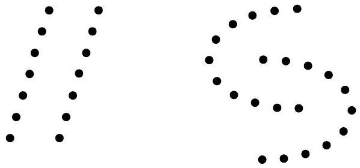
一張乾淨的 2D 散點圖，兩群分別用藍色與橘色的點表示，點間以灰色細線連成最小生成樹（MST），其中跨越兩群之間的唯一一條橋邊以紅色粗線特別標出並標註「inconsistent 邊」，畫面右下附一個小框顯示剪掉該邊後資料斷成兩群的分簇結果。對 MST 分群，兩條邊 $e_1$、$e_2$「相隔 $k$ 步」的定義是什麼？
在 MST 算法中，一條邊 $e$ 被判成 inconsistent 的條件是（$m_e$、$\sigma_e$ 為至多 $k$ 步內邊權的平均與標準差）？
Example 15.1 中，$k=2,q=3$，$m_{e_0}=2.3$、$\sigma_{e_0}=0.95$，且 $w_{e_0}$ 距 $m_{e_0}$ 有 15.5 個標準差。$e_0$ 的判決是？
圖 15.3 展示 MST 分群的一種失敗情境，內容是什麼？
Regions of Influence（影響區域）
▼想克服 MST 的缺點
「影響區域（region of influence）」是 MST 的延伸，被拿來克服 MST 演算法會遇到的一些問題（例如圖 15.3 那種讓兩群相連誤併的狀況）。
影響區域的定義
考慮兩個相異向量 $\boldsymbol{x}_{i},\boldsymbol{x}_{j} \in X$。它們的影響區域 $R(\boldsymbol{x}_{i},\boldsymbol{x}_{j})$ 定義為滿足某條「距離條件」的點 $\boldsymbol{x}$ 所成集合：
$$R(\boldsymbol{x}_{i},\boldsymbol{x}_{j})=\left\{\boldsymbol{x}:\; \operatorname{cond}\big(d(\boldsymbol{x},\boldsymbol{x}_{i}),d(\boldsymbol{x},\boldsymbol{x}_{j}),d(\boldsymbol{x}_{i},\boldsymbol{x}_{j})\big),\ \boldsymbol{x}_{i}\neq\boldsymbol{x}_{j}\right\} \tag{15.1}$$
其中 $\operatorname{cond}(\cdot)$ 是對三個距離——$d(\boldsymbol{x},\boldsymbol{x}_{i})$、$d(\boldsymbol{x},\boldsymbol{x}_{j})$、$d(\boldsymbol{x}_{i},\boldsymbol{x}_{j})$——的某種條件。選擇不同的 $\operatorname{cond}$ 就會得到不同形狀的影響區域。常見的選擇（圖 15.5）有：
- 式 (15.2)：$\max\{d(\boldsymbol{x},\boldsymbol{x}_{i}),d(\boldsymbol{x},\boldsymbol{x}_{j})\} \lt d(\boldsymbol{x}_{i},\boldsymbol{x}_{j})$。
- 式 (15.3)：$d^{2}(\boldsymbol{x},\boldsymbol{x}_{i})+d^{2}(\boldsymbol{x},\boldsymbol{x}_{j}) \lt d^{2}(\boldsymbol{x}_{i},\boldsymbol{x}_{j})$。
- 式 (15.4)：$\big(d^{2}(\boldsymbol{x},\boldsymbol{x}_{i})+d^{2}(\boldsymbol{x},\boldsymbol{x}_{j}) \lt d^{2}(\boldsymbol{x}_{i},\boldsymbol{x}_{j})\big)$ 或 $\big(\sigma \min\{d(\boldsymbol{x},\boldsymbol{x}_{i}),d(\boldsymbol{x},\boldsymbol{x}_{j})\} \lt d(\boldsymbol{x}_{i},\boldsymbol{x}_{j})\big)$。
- 式 (15.5)：$\big(\max\{d(\boldsymbol{x},\boldsymbol{x}_{i}),d(\boldsymbol{x},\boldsymbol{x}_{j})\} \lt d(\boldsymbol{x}_{i},\boldsymbol{x}_{j})\big)$ 或 $\big(\sigma\min\{d(\boldsymbol{x},\boldsymbol{x}_{i}),d(\boldsymbol{x},\boldsymbol{x}_{j})\} \lt d(\boldsymbol{x}_{i},\boldsymbol{x}_{j})\big)$。
式 (15.4)、(15.5) 中的 $\sigma$ 稱為相對邊一致性（relative edge consistency），它影響影響區域的大小，須事先挑好。前三種型態的影響區域分別呈：菱形（式15.2）、圓形（式15.3），以及 (15.4)、(15.5) 的更複雜形狀（圖 15.5 a–d）。
演算法：連通分量即群
- 對 $i=1$ 到 $N$，對 $j=i+1$ 到 $N$：計算影響區域 $R(\boldsymbol{x}_{i},\boldsymbol{x}_{j})$。
- 若 $R(\boldsymbol{x}_{i},\boldsymbol{x}_{j}) \cap\big(X-\{\boldsymbol{x}_{i},\boldsymbol{x}_{j}\}\big)=\emptyset$，則在 $\boldsymbol{x}_{i},\boldsymbol{x}_{j}$ 之間加上一條邊。
- 最後，所成圖形的連通分量就辨識成各群。
白話來說：如果「影響區域內沒有其它資料點」，就代表 $\boldsymbol{x}_{i}$ 與 $\boldsymbol{x}_{j}$ 靠得很近、附近沒有第三者來攪局，那就連一條邊；反之如果區域內有別的點，表示這兩個點隔得較遠，不加邊。
與 RNG、Gabriel 圖的關聯
用式 (15.2) 得到的圖稱做 relative neighborhood graph（RNG，相對鄰近圖），用式 (15.3) 得到的叫 Gabriel graph（GG）。這類影響區域方法可以避免圖 15.3 那種「兩個相連群被誤併」的情形，且在文獻 [Urqu 82] 中，式 (15.4)、(15.5) 兩個選擇常表現得比前兩者更優。此外，這個算法對「成對向量處理的順序」不敏感，只對後兩個選擇需要事先給 $\sigma$。
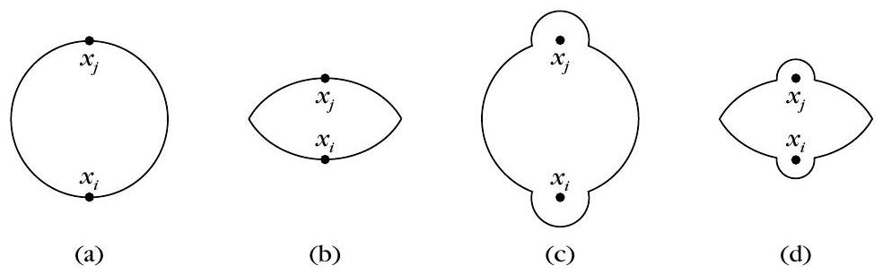
在「影響區域」算法中，什麼條件下會在 $\boldsymbol{x}_{i}$、$\boldsymbol{x}_{j}$ 之間加上一條邊？
式 (15.2) $\max\{d(\boldsymbol{x},\boldsymbol{x}_{i}),d(\boldsymbol{x},\boldsymbol{x}_{j})\}\lt d(\boldsymbol{x}_{i},\boldsymbol{x}_{j})$ 所產生的圖叫做什麼？
哪個式子對應到 Gabriel 圖（GG）？
「影響區域」方法對 MST 演算法的主要好處是什麼？
Directed Trees（有向樹）
▼以「有向樹」來找群
這是一個基於有向樹想法的分群方案。先補幾個定義：有向圖就是每條邊都有方向的圖。若一個頂點 $A$ 是 $e_{i_{1}}$ 的起點、$B$ 是 $e_{i_{q}}$ 的終點，且每一條 $e_{i_{j}}$ 的目的頂點都是 $e_{i_{j+1}}$ 的出發頂點，則 $e_{i_{1}},\ldots,e_{i_{q}}$ 就構成一條從 $A$ 到 $B$ 的有向路徑。而有向樹是一棵有特定節點 $A$（根 root）的有向圖，滿足三個條件：
- 每個非根節點 $B \neq A$ 恰好是一條邊的起始節點；
- 沒有邊從 $A$ 出發；
- 不產生圈（沒有從某節點回到它自己的有向路徑）。
算法的目標，就是在對應到 $X$ 的圖中找出若干有向樹，讓每棵樹對應一個群。
鄰域與關鍵量
$X$ 的點依序被處理。對每個點 $\boldsymbol{x}_{i}$，它的鄰域定義為：
$$\rho_{i}(\theta)=\left\{\boldsymbol{x}_{j}\in X: d(\boldsymbol{x}_{i},\boldsymbol{x}_{j})\leq\theta,\ \boldsymbol{x}_{j}\neq\boldsymbol{x}_{i}\right\} \tag{15.6}$$
其中 $\theta$ 決定鄰域大小。令 $n_{i}=\left|\rho_{i}(\theta)\right|$ 為落在 $\rho_{i}(\theta)$ 內點的個數；再令
$$g_{ij}=\frac{n_{j}-n_{i}}{d(\boldsymbol{x}_{i},\boldsymbol{x}_{j})}$$
$g_{ij}$ 用來決定 $\boldsymbol{x}_{i}$ 在有向樹中的位置：它衡量「往 $\boldsymbol{x}_{j}$ 走時，鄰域點數的變化量」。
演算法
- 設定 $\theta$；計算 $n_{i}, i=1,\ldots,N$；計算 $g_{ij}, i,j=1,\ldots,N,\ i\neq j$。
- 對 $i=1$ 到 $N$：
- 若 $n_{i}=0$：$\boldsymbol{x}_{i}$ 是一棵新有向樹的根。
- 否則找 $\boldsymbol{x}_{r}$ 使 $g_{ir}=\max_{\boldsymbol{x}_{j}\in\rho_{i}(\theta)}g_{ij}$：
- 若 $g_{ir}\lt 0$：$\boldsymbol{x}_{i}$ 是根。
- 若 $g_{ir}\gt 0$：$\boldsymbol{x}_{r}$ 是 $\boldsymbol{x}_{i}$ 的父節點。
- 若 $g_{ir}=0$：定義 $T_{i}=\{\boldsymbol{x}_{j}:\boldsymbol{x}_{j}\in\rho_{i}(\theta), g_{ij}=0\}$，刪去其中能「從 $\boldsymbol{x}_{j}$ 走到 $\boldsymbol{x}_{i}$」的點；若 $T_{i}$ 空了則 $\boldsymbol{x}_{i}$ 為根，否則選與 $\boldsymbol{x}_{i}$ 距離最小的 $\boldsymbol{x}_{q}$ 當父節點。
- 由這些步驟生出的有向樹，其根系對應的就是各群。
從演算法可以看出，一個有向樹的根（例如 $\boldsymbol{x}_{i}$）具有「在 $\rho_{i}(\theta)$ 內最大 $n_{i}$」的性質——也就是說，在它的鄰域裡，它是環境密度最高的點。分支定界那一段是為了確保不產生圈。這演算法對向量處理順序敏感；但對恰當的 $\theta$ 與足夠大的 $N$，它能像一個「找眾數（mode-seeking）」的算法般運作。
Example 15.2
圖 15.7 中，網格邊長為 1、小長方形對角線長 $\sqrt{2}$，$X=\{\boldsymbol{x}_{i},i=1,\ldots,11\}$ 明顯形成兩個分得很開的群。取 $\theta=1.1$ 跑上述算法，得到圖 15.7 中的兩棵有向樹。有趣的是，若把 $\boldsymbol{x}_{5}$ 放在 $\boldsymbol{x}_{4}$ 之前處理，左邊那棵有向樹的根會不同——但在這個簡單例子裡，最終分群結果仍相同。
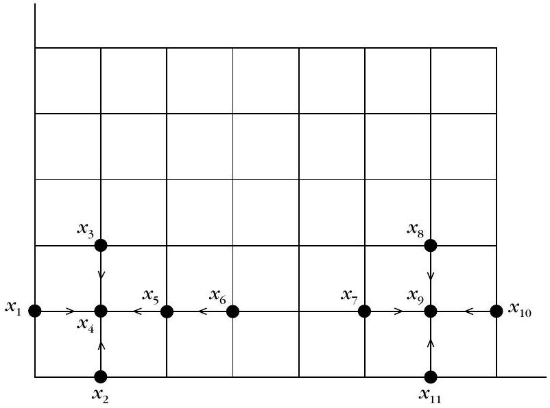
一棵「有向樹」需要滿足下列哪個性質？
在 Directed Trees 算法中，$g_{ij}=(n_j-n_i)/d(\boldsymbol{x}_{i},\boldsymbol{x}_{j})$，其中 $n_i$ 代表什麼？
若 $g_{ir}=\max_{\boldsymbol{x}_{j}\in\rho_{i}(\theta)}g_{ij}$ 且 $g_{ir}\gt 0$，算法會怎麼做？
有向樹的「根」節點有什麼特徵？
Spectral Clustering（頻譜分群）
▼用「矩陣的頻譜（特徵分解）」揭開圖的結構
頻譜分群是一類圖論技法：它用「一個關聯矩陣的特徵分解」來揭開圖的結構。這個矩陣的元素，編碼的是圖中各節點（資料點）之間的相似度。它近年在很多經典方法失效的場合表現更佳，加上有趣的理論問題，因此很受關注。
我們專注最簡單的任務：把資料集 $X=\{\boldsymbol{x}_{1},\ldots,\boldsymbol{x}_{N}\}\subset\mathcal{R}^{l}$ 二分割成兩個群 $A$ 與 $B$（$A\cup B=X$、$A\cap B=\emptyset$）。
建圖與相似矩陣
- 建一個無向、連通的圖 $G(V,E)$，每個節點對應一個 $\boldsymbol{x}_{i}$。
- 每條邊 $e_{ij}$ 給權重 $W(i,j)$ 衡量兩節點的相似性，構成對稱的 $N\times N$ 矩陣 $W\equiv[W(i,j)]$（proximity/affinity 矩陣）。常見選法：
$$W(i,j)=\begin{cases}\exp\left(-\frac{\|\boldsymbol{x}_{i}-\boldsymbol{x}_{j}\|^{2}}{2\sigma^{2}}\right),& \|\boldsymbol{x}_{i}-\boldsymbol{x}_{j}\|\lt \epsilon\0,& \text{otherwise}\end{cases}$$
其中 $\epsilon$ 是使用者給的常數、$\|\cdot\|$ 是歐氏範數。$\sigma$ 的選擇很關鍵：選不好會嚴重影響結果（這在前面的核方法章也常遇到）。
割裂準則與它的弱點
常用的一個準則是割裂 cut（[Wu 93]）：
$$\operatorname{cut}(A,B)=\sum_{i\in A,\ j\in B}W(i,j) \tag{15.7}$$
把 $A,B$ 選成讓 $\operatorname{cut}(A,B)$ 最小，就是在「連接 $A$ 与 $B$ 的那些邊權和」最小。但這個簡單準則有個毛病：它傾向產生由孤立點組成的小群（圖 15.8 的虛線），而不是直覺上較自然的切割（實線）。
歸一化割（normalized cut）
為了既最小化 cut、又盡量讓群「夠大」，我們定義每個節點 $v_{i}$ 的度 $D_{ii}=\sum_{j\in V}W(i,j)$（式 15.8），它衡量節點的「重要性」，越大表示和其餘節點越相似；小則表示孤立點。對群 $A$，其體積 $V(A)=\sum_{i\in A}D_{ii}=\sum_{i\in A,\ j\in V}W(i,j)$（式 15.9）。歸一化割定義為：
$$\operatorname{Ncut}(A,B)=\frac{\operatorname{cut}(A,B)}{V(A)}+\frac{\operatorname{cut}(A,B)}{V(B)} \tag{15.10}$$
小的孤立群 $A$ 會讓 $\operatorname{cut}(A,B)/V(A)$ 接近 1（因為 cut 佔 $V(A)$ 比例很大），因此 Ncut 會罰掉「小群」，偏好大群。
把問題轉成「特徵向量」
最小化 Ncut 是 NP-hard，所以我們把它放鬆成可近似求解的型態。定義群指示向量 $\boldsymbol{y}=[y_{1},\ldots,y_{N}]^{T}$：
$$y_{i}=\begin{cases}\frac{1}{V(A)},& i\in A\-\frac{1}{V(B)},& i\in B\end{cases}$$
記圖的 Laplacian 矩陣 $L=D-W$（$D\equiv\operatorname{diag}\{D_{ii}\}$）。代入可得 $\boldsymbol{y}^{T}L\boldsymbol{y}\propto\left(\frac{1}{V(A)}+\frac{1}{V(B)}\right)^{2}\operatorname{cut}(A,B)$，以及 $\boldsymbol{y}^{T}D\boldsymbol{y}=\frac{1}{V(A)}+\frac{1}{V(B)}$。把兩式結合，最小化 $\operatorname{Ncut}$ 等價於最小化
$$J=\frac{\boldsymbol{y}^{T}L\boldsymbol{y}}{\boldsymbol{y}^{T}D\boldsymbol{y}}$$
（受限於 $y_{i}\in\{\frac{1}{V(A)},-\frac{1}{V(B)}\}$，且 $\boldsymbol{y}^{T}D\mathbf{1}=0$）。放鬆 $y_{i}$ 到實數軸上，並定義 $\boldsymbol{z}\equiv D^{1/2}\boldsymbol{y}$，可得 $J=\frac{\boldsymbol{z}^{T}\tilde{L}\boldsymbol{z}}{\boldsymbol{z}^{T}\boldsymbol{z}}$，其中 $\tilde{L}\equiv D^{-1/2}LD^{-1/2}$ 是歸一化圖拉普拉斯矩陣。$\tilde{L}$ 對稱且非負定，所以特徵值皆非負、特徵向量正交，且 $D^{1/2}\boldsymbol{1}$ 是對應特徵值 $0$（最小）的特徵向量。
為什麼用「第二小特徵值」
$J$ 的型式正是著名的Rayleigh 商。Rayleigh 商的最小值是最小特徵值；若再要求解與「前 $j$ 個最小特徵值」的特徵向量正交，則其最小會落在「下一個」最小特徵值 $\lambda_{j}$ 上。由於我們有正交限制 $\boldsymbol{z}^{T}D^{1/2}\boldsymbol{1}=0$（要與 $\lambda_{0}=0$ 的特徵向量正交），因此最適解 $\boldsymbol{z}$ 就是對應第二小特徵值的特徵向量。
頻譜分群算法步驟
- 建加權圖，用相似規則定出矩陣 $W$。
- 組出 $D$、$L=D-W$、$\tilde{L}$，對 $\tilde{L}$ 做特徵分解 $\tilde{L}\boldsymbol{z}=\lambda\boldsymbol{z}$，取第二小特徵值 $\lambda_{1}$ 的特徵向量 $\boldsymbol{z}_{1}$，再算 $\boldsymbol{y}=D^{-1/2}\boldsymbol{z}_{1}$。
- 以一個閾值把 $\boldsymbol{y}$ 的實數分量離散化成 0/1（閾值可為 0、中位數、或讓 cut 最小的值）。
實作成本上，特徵分解是 $O(N^{3})$；但實際圖通常只在局部連接（$W$ 稀疏），且只需最小的幾個特徵值，用 Lanczos 法可降到約 $O(N^{3/2})$。若想分更多群，可採用層次式：每步把每個群再切成兩群；但若靠「第三小特徵值」繼續切，容易因近似誤差而不可靠。
其它準則與應用
除 normalized cut 外，還有 ratio cut $\operatorname{Rcut}(A,B)=\frac{\operatorname{cut}(A,B)}{|A|}+\frac{\operatorname{cut}(A,B)}{|B|}$ 與 Cheeger 常數 $h_{G}=\frac{\operatorname{cut}(A,B)}{\min(V(A),V(B))}$ 等。頻譜分群廣被用於影像分割、運動追蹤、電路佈局、基因表現、機器學習、負載平衡等。
Example 15.3：同心圓
圖 15.9a 有兩個同心圓形群：一個在 (0,0) 半徑約 3 的圓周附近，另一個在 (0,0) 半徑約 6 的圓周附近。用頻譜分群（$\sigma^{2}=2$、$\varepsilon=2$，normalized cut）成功把兩群分開（圖 15.9b）；反而是 $k$-means 失敗（圖 15.9c），因為 $k$-means 天生傾向找「緊湊」的群，處理不了環狀分布。
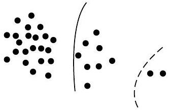
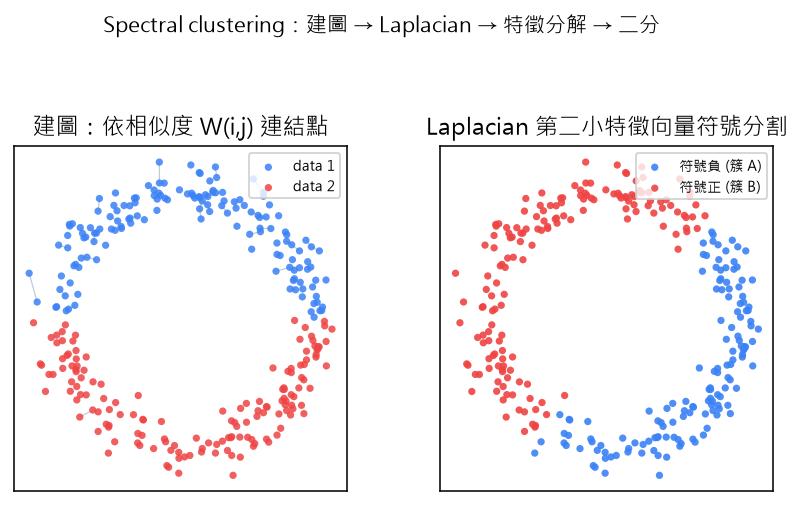
畫一張「光譜聚類（Spectral Clustering）」示意圖：左圖為平面散點，呈現兩個交錯的半圓形點簇，點之間用淺灰色細線連出部分相似度邊；右圖為同一批點，依照 Laplacian 第二小特徵向量的符號分割成兩組，分別以藍色與紅色著色，標題說明「建圖 → Laplacian → 特徵分解 → 二分」的流程。頻譜分群用「某個矩陣的特徵分解」來揭開圖的結構，這個矩陣編碼的是什麼？
最小「cut」準則（式 15.7）的主要缺點是什麼？
歸一化割 Ncut 的定義是哪一個？
在（歸一化）頻譜分群的二分割中，決策向量 $\boldsymbol{z}$ 對應的是歸一化拉普拉斯矩陣 $\tilde{L}$ 的哪個特徵向量？
基本競爭式學習演算法（Basic Competitive Learning）
▼競爭式學習在做什麼
競爭式學習（competitive learning）是「一群代表點彼此競爭」的分群方式：每個代表點 $\boldsymbol{w}_{j}$ 都想爭取成為某一筆資料 $\boldsymbol{x}$ 的「贏家」，只有贏家才會被更新、移向 $\boldsymbol{x}$，輸家原地不動。在 15.3.1 的基本版本中，代表的個數 $m$ 全程固定（$m=m_{\text{init}}=m_{\text{max}}$），因此關於增刪代表的條件 (C) 永遠不會觸發，也不需要其他參數（條件 (A) 省略）。
誰是贏家
決定贏家（條件 (B)）的規則很直觀：代表 $\boldsymbol{w}_{j}$ 在 $\boldsymbol{x}$ 上成為贏家，若且唯若它距離 $\boldsymbol{x}$ 最近，即
$$d\left(\boldsymbol{x}, \boldsymbol{w}_{j}\right)=\min _{k=1, \ldots, m} d\left(\boldsymbol{x}, \boldsymbol{w}_{k}\right)$$
這叫 winner-take-all（贏家全拿）：先算每個代表到 $\boldsymbol{x}$ 的距離，距離最小者勝出。內文預設用歐氏距離；但在語音編碼等應用也有人用 Itakura-Saito 失真，甚至改用相似度度量（此時把 min 換成 max，相似度最高者勝）。
只更新贏家（式 15.19）
代表的更新（條件 (D)）如下，式中 $\eta$ 為學習率、取值在 $[0,1]$：
$$\boldsymbol{w}_{j}(t)= \begin{cases}\boldsymbol{w}_{j}(t-1)+\eta\left(\boldsymbol{x}-\boldsymbol{w}_{j}(t-1)\right), & \text { if } \boldsymbol{w}_{j} \text { is the winner } \\ \boldsymbol{w}_{j}(t-1), & \text { otherwise }\end{cases}$$
這條式子告訴我們三件事：
- 輸家（losers）完全不動：只有「是贏家」那一分支才更新，其餘代表維持原值。
- 贏家朝 $\boldsymbol{x}$ 移動：移動量大小由 $\eta$ 決定。極端情形，$\eta=0$ 完全不更新；$\eta=1$ 則贏家直接跳到 $\boldsymbol{x}$ 的位置。
- 對介於中間的 $\eta$，新的贏家位置會落在「舊贏家 $\boldsymbol{w}_{j}(t-1)$ 與 $\boldsymbol{x}$」兩點連成的線段上——也就是每次只往資料點靠一步。
兩個需要留意的問題
第一，這個演算法要求事先知道群數（代表個數），因為 $m$ 固定。第二是代表初始化的問題：若某個代表被初始化在離 $X$ 中所有資料都很遠的地方，它很可能永遠搶不到任何資料、永遠不贏，等於這個代表被浪費掉。一個簡單的解法是「用 $X$ 中的向量來初始化所有代表」，讓每個代表一開始就在資料附近。
收斂與變動學習率
若資料總是以固定順序呈現（$\boldsymbol{x}_{1}, \boldsymbol{x}_{2}, \ldots, \boldsymbol{x}_{N}$ 循環），且在某次迭代 $t_{0}$ 之後每個代表都穩定地贏在同一群向量上（在群體分得很開時合理），可證明每個代表會收斂到它所代表向量的加權平均。若學習率隨時間變動，常見約束有：
- $\eta(t)$ 為正的遞減序列且 $\eta(t) \rightarrow 0$；
- $\sum_{t=0}^{\infty} \eta(t)=\infty$；
- 對 $r\gt 1$ 有 $\sum_{t=0}^{\infty} \eta^{r}(t)\lt +\infty$。
這些約束和 Robbins-Monro 隨機逼近法的條件幾乎一樣，並非巧合。以最簡單的 $m=1$ 為例，$\eta=\eta(t)$ 時的更新式可視為解 $E[b(\boldsymbol{x}, \boldsymbol{w})]=0$ 的 Robbins-Monro 迭代，其中 $\boldsymbol{h}(\boldsymbol{x}, \boldsymbol{w})=\boldsymbol{x}-\boldsymbol{w}$。
在基本競爭式學習中，當代表 $\boldsymbol{w}_{j}$ 在某個資料 $\boldsymbol{x}$ 上成為「贏家」時，哪個描述正確？
在基本競爭式學習中，若學習率 $\eta=1$，代表會發生什麼事？
基本競爭式學習若把某個代表初始化在離所有資料都很遠的地方，會發生什麼問題？
洩漏式學習演算法（Leaky Learning）
▼動機：輸家也不再坐視不管
基本競爭式學習有個缺點：初始化不佳的代表可能永遠贏不了、永遠不被更新。洩漏式學習（leaky learning）想補救這點——它讓輸家也動起來，只是動得非常慢。它和基本版本唯一不同處，就是代表的更新方程式（式 15.20）：
$$\boldsymbol{w}_{j}(t)= \begin{cases}\boldsymbol{w}_{j}(t-1)+\eta_{w}\left(\boldsymbol{x}-\boldsymbol{w}_{j}(t-1)\right), & \text { if } \boldsymbol{w}_{j} \text { is the winner } \\ \boldsymbol{w}_{j}(t-1)+\eta_{l}\left(\boldsymbol{x}-\boldsymbol{w}_{j}(t-1)\right), & \text { if } \boldsymbol{w}_{j} \text { is a loser }\end{cases}$$
其中 $\eta_{w}$ 與 $\eta_{l}$ 都在 $[0,1]$，且 $\eta_{w} \gg \eta_{l}$。也就是說：
- 贏家用較大的學習率 $\eta_{w}$ 快速移向 $\boldsymbol{x}$；
- 輸家用很小的學習率 $\eta_{l}$ 慢慢移向 $\boldsymbol{x}$。
基本式可視為洩漏式的特例：取 $\eta_{l}=0$ 即回歸「輸家完全不動」。當 $\eta_{w}$、$\eta_{l}$ 都為正時，所有代表都往 $\boldsymbol{x}$ 移動，只是輸家比贏家慢得多。正是這條輸家分支，讓這個演算法不那麼怕初始化差：即使某些代表被初始化在離資料很遠的地方，它們終究會慢慢靠近資料所在的區域。
同類的 neural-gas 演算法
與洩漏式學習同一個精神的是 neural-gas 演算法：它讓輸家的學習率取決於「這個代表距離 $\boldsymbol{x}$ 有多近」。這裡 $\eta_{w}=\varepsilon$，而 $\eta_{l}=\varepsilon g\left(k_{j}\left(\boldsymbol{x}, \boldsymbol{w}_{j}(t-1)\right)\right)$，其中 $\varepsilon\in[0,1]$ 是更新步長，$k_{j}$ 是「比 $\boldsymbol{w}_{j}(t-1)$ 更靠近 $\boldsymbol{x}$ 的代表個數」，$g(\cdot)$ 在 $k_{j}=0$ 時取值 $1$、隨 $k_{j}$ 增加而衰減到 $0$。也就是說離 $\boldsymbol{x}$ 越近的代表被更新得越多、越遠的越少。有趣的是，這個演算法可以看成是對某個成本函數做梯度下降所得的結果。
與基本競爭式學習相比，洩漏式學習最核心的差別是什麼？
洩漏式學習如何緩解代表初始化不佳的問題？
neural-gas 演算法中，代表更新步長的特色是？
審慎競爭式學習（Conscientious Competitive Learning）
▼給代表「良心」
基本競爭式學習可能讓某些代表贏太多、另一些幾乎不贏，造成利用不平均。審慎式學習的點子是：哪個代表過去贏太多次，就懲罰它、讓它之後更難再贏，把「贏權」分給那些表現不佳的代表，這個機制就叫 conscience（良心）。
最簡單的實現：計數器 $f_{j}$（式 Ahal）
為每個代表 $\boldsymbol{w}_{j}$ 配一個計數器 $f_{j}$，記錄它贏過幾次。初始化（條件 (A)）時設 $f_{j}=1$（$j=1,\ldots,m$），並定義
$$d^{*}\left(\boldsymbol{x}, \boldsymbol{w}_{j}\right)=d\left(\boldsymbol{x}, \boldsymbol{w}_{j}\right) f_{j}$$
接著條件 (B) 改成「$d^{*}$ 最小者贏」：
- 代表 $\boldsymbol{w}_{j}$ 在 $\boldsymbol{x}$ 上獲勝，若 $d^{*}\left(\boldsymbol{x}, \boldsymbol{w}_{j}\right)=\min _{k=1, \ldots, m} d^{*}\left(\boldsymbol{x}, \boldsymbol{w}_{k}\right)$。
- 贏後更新計數器：$f_{j}(t)=f_{j}(t-1)+1$。
這其實是把距離「加權處罰」：$f_{j}$ 越大，$d^{*}$ 越大，就代表越難被選為贏家。條件 (C)、(D) 與基本競爭式相同，且 $m=m_{\mathrm{init}}=m_{\mathrm{max}}$。另一種做法是用累積距離 $f_{j}=f_{j}+d\left(\boldsymbol{x}, \boldsymbol{w}_{j}\right)$ 當權重。
另一種模型（Chen 94）
Chen 的版本在初始化時把所有的 $f_{j}$ 設為 $1/m$，並定義
$$d^{*}\left(\boldsymbol{x}, \boldsymbol{w}_{j}\right)=d\left(\boldsymbol{x}, \boldsymbol{w}_{j}\right)+\gamma\left(f_{j}-1 / m\right)$$
其中 $\gamma$ 是 conscience 參數。令 $z_{j}(\boldsymbol{x})$ 在 $\boldsymbol{w}_{j}$ 贏時為 $1$、否則為 $0$，則條件 (B) 中，$d^{*}$ 最小者勝出，計數器更新為
$$f_{j}(t)=f_{j}(t-1)+\varepsilon\left(z_{j}(\boldsymbol{x})-f_{j}(t-1)\right), \quad 0\lt \varepsilon \ll 1$$
關鍵差別是：贏家 $f_{j}$ 上升、輸家 $f_{j}$ 下降（上一種乘法的做法輸家不變）。$f_{j}$ 高 → $\gamma(f_{j}-1/m)$ 大 → $d^{*}$ 大 → 更難再贏，如此把「表現機會」分給長期低利用的 unit。$\varepsilon$ 與 $\gamma$ 的取值指引與 $\gamma$ 自適應調整的做法可參考 [Chen 94]。
- 乘式（Ahal 90）：$d^*(\boldsymbol{x},\boldsymbol{w}_j)=d(\boldsymbol{x},\boldsymbol{w}_j)\cdot f_j$，$f_j$ 初值 1、贏家 $f_j\mathrel{+}=1$。
- 加式（Chen 94）：$d^*(\boldsymbol{x},\boldsymbol{w}_j)=d(\boldsymbol{x},\boldsymbol{w}_j)+\gamma\big(f_j-\tfrac{1}{m}\big)$，$f_j$ 初值 $1/m$、更新 $f_j\mathrel{+}=\varepsilon(z_j-f_j)$，$z_j$=1 若 $j$ 贏。
審慎式競爭式學習（conscience）的用意為何？
在 Ahal 的最簡單模型中，$d^{*}(\boldsymbol{x},\boldsymbol{w}_{j})=d(\boldsymbol{x},\boldsymbol{w}_{j})f_{j}$，$f_{j}$ 越大代表什麼？
Chen 94 模型中 $f_{j}(t)=f_{j}(t-1)+\varepsilon(z_{j}(\boldsymbol{x})-f_{j}(t-1))$ 的特性是？
成本函數關聯的競爭式學習（Cost-Function Competitive Learning）
▼把「競爭」寫成成本函數
競爭式學習的直覺是「把代表移向它最近的資料」。若用成本函數表達，一種自然的形式是（式 15.21）：
$$J(\boldsymbol{W})=\frac{1}{2 m} \sum_{i=1}^{N} \sum_{j=1}^{m} z_{j}\left(\boldsymbol{x}_{i}\right)\left\|\boldsymbol{x}_{i}-\boldsymbol{w}_{j}\right\|^{2}$$
其中 $\boldsymbol{W}=\left[\boldsymbol{w}_{1}^{T}, \ldots, \boldsymbol{w}_{m}^{T}\right]^{T}$，而 $z_{j}(\boldsymbol{x})=1$ 若 $\boldsymbol{w}_{j}$ 比其它代表更靠近 $\boldsymbol{x}$，否則為 $0$。這其實正是第 14 章 isodata 演算法對應的成本函數，但它不可微——因為 $z_{j}(\boldsymbol{x})$ 是非連續的 0/1 指標。
光滑化 $z_{j}$：軟化競爭
要克服不可微性，一個做法是把 $z_{j}$ 光滑化（式 15.22）：
$$z_{j}(\boldsymbol{x})=\frac{\left\|\boldsymbol{x}-\boldsymbol{w}_{j}\right\|^{-2}}{\sum_{r=1}^{m}\left\|\boldsymbol{x}-\boldsymbol{w}_{r}\right\|^{-2}}, \quad j=1, \ldots, m$$
其中 $\|\cdot\|$ 是歐氏距離。這意味著 $z_{j}$ 不再強制等於 0 或 1，而是落在 $[0,1]$；$\boldsymbol{w}_{j}$ 離 $\boldsymbol{x}$ 越近，$z_{j}$ 越大。正因如此，「競爭」的概念被放棄了——所有代表不是贏家全拿，而是按其與 $\boldsymbol{x}$ 的距離比例被更新。整個推導可整理成四步：
- 先寫出不可微的成本函數 $J(\boldsymbol{W})$（式 15.21，含硬性 0/1 指標 $z_{j}$）；
- 用式 15.22 把 $z_{j}$ 光滑化，使其落在 $[0,1]$ 且越近越大；
- 代入化簡，得到等價、可微的 $J(\boldsymbol{W})$（式 15.23）；
- 對 $\boldsymbol{w}_{k}$ 取梯度（式 15.24），再用瞬時梯度做梯度下降，得到更新式 15.25。
代入定義並化簡後，$J(\boldsymbol{W})$ 可寫成（式 15.23）：
$$J(\boldsymbol{W})=\frac{1}{2} \sum_{i=1}^{N}\left(\sum_{j=1}^{m}\left\|\boldsymbol{x}_{i}-\boldsymbol{w}_{j}\right\|^{-2}\right)^{-1}$$
對 $\boldsymbol{w}_{k}$ 取梯度，經一些代數可得（式 15.24）：
$$\frac{\partial J}{\partial \boldsymbol{w}_{k}}=-\sum_{i=1}^{N} z_{k}^{2}\left(\boldsymbol{x}_{i}\right)\left(\boldsymbol{x}_{i}-\boldsymbol{w}_{k}\right)$$
梯度下降的更新式
在梯度下降的框架下，套用「瞬時梯度」（如同反向傳播的做法），得到更新式（式 15.25）：
$$\boldsymbol{w}_{k}(t)=\boldsymbol{w}_{k}(t-1)+\eta(t) z_{k}^{2}(\boldsymbol{x})\left(\boldsymbol{x}-\boldsymbol{w}_{k}(t-1)\right), \quad k=1, \ldots, m$$
其中 $\boldsymbol{x}$ 是目前餵給演算法的向量。注意：所有代表都被更新，且更新的幅度正比於它們距離 $\boldsymbol{x}$ 的遠近（$z_{k}^{2}$ 越大更新越多）。如此一來，「光滑化 $z_{k}$」讓我們得到廣義上仍具競爭性的演算法，並能套用一般收斂理論工具來證明其收斂性質。
基本競爭式成本函數（式 15.21）為何不可微？
光滑化後 $z_{j}(\boldsymbol{x})$（式 15.22）的意義是？
最終更新式（式 15.25）的特性是？
自組織映射圖（Self-Organizing Maps, SOM）
▼把代表擺進一／二維網格
到目前為止代表 $\boldsymbol{w}\in\mathbb{R}^{l}$ 被視為彼此無關。SOM 要移除這個假設，強迫代表在一維或二維空間中「拓撲有序」。以二維為例，每個 $\boldsymbol{w}$ 用一個整數對 $(i,j)$ 參數化，$i=1,\ldots,I,\ j=1,\ldots,J$，$I J$ 就是代表數，如此定義出一個網格的節點。目標是：在資料空間 $\mathbb{R}^{l}$ 中靠得很近的資料點，由網格上靠得很近的代表來表示；資料中不同的「稠密區域」映射到地圖（map）上不同的區域。
拓撲距離與鄰居 $Q_{j}$
拓撲有序需要代表之間的拓撲距離。例如二維網格中，位置 $(i_{1},j_{1})$ 與 $(i_{2},j_{2})$ 兩代表的拓撲距離可取兩整數對之間的 $l_{1}$ 距離。圖 15.10a 中 $\boldsymbol{w}_{r}$ 與 $\boldsymbol{w}_{q}$ 在網格上很靠近，$\boldsymbol{w}_{s}$ 離兩者都遠；圖 15.10b 是一維網格。接著為每個代表定義拓撲鄰居 $Q_{j}$：拓撲距離與 $\boldsymbol{w}_{j}$ 相近的代表集合。典型鄰居形狀見圖 15.11（二維網格的方形 $3\times 3$ 鄰居、一維的 $5\times 1$），二維也可用六角或菱形等形狀。
勝者與鄰居一起更新（式 15.26）
每次迭代餵入一個資料 $\boldsymbol{x}$。當 $\boldsymbol{w}_{j}$ 在某資料上勝出，它所在的鄰居 $Q_{j}(t)$ 內所有代表也一起更新（一起移向 $\boldsymbol{x}$），且鄰居可隨迭代改變。更新式為
$$\boldsymbol{w}_{k}(t)= \begin{cases}\boldsymbol{w}_{k}(t-1)+\eta(t)\left(\boldsymbol{x}-\boldsymbol{w}_{k}(t-1)\right), & \text { if } \boldsymbol{w}_{k} \in Q_{j}(t) \\ \boldsymbol{w}_{k}(t-1), & \text { otherwise }\end{cases}$$
其中 $\eta(t)$ 是可變學習率，需滿足 15.3.1 節的條件。整個 SOM 的執行過程可濃縮成幾步：
- 在網格上定義代表，並用拓撲距離定出每個代表 $\boldsymbol{w}_{j}$ 的鄰域 $Q_{j}(t)$；
- 每次迭代餵入一筆資料 $\boldsymbol{x}$，依距離找出勝者 $\boldsymbol{w}_{j}$；
- 把勝者 及其在 $Q_{j}(t)$ 內的所有鄰居一起移向 $\boldsymbol{x}$（式 15.26），其餘不動；
- 隨 $t$ 增大，縮小鄰域 $Q_{j}(t)$ 並依約束調整 $\eta(t)$，直到收斂。
訓練初期，隨機初始化的拓撲近鄰代表可能贏在不靠緊的資料上；隨著訓練演進，此現象會衰減，收斂後網格上拓撲相鄰的代表會贏在資料空間同一區域，而拓撲相遠的代表則贏在不同區域——每個稠密資料區域都由一組拓撲近鄰代表共同表示。
Kohonen SOM 與收斂
這就是知名的 Kohonen 自組織映射（SOM）。在最簡單形式下，它是 GCLS 的特例：條件 (A)(B)(C) 與基本公共式相同，只有條件 (D) 改成上式。$\eta(t)$ 與 $Q_{j}(t)$ 的選擇對收斂很關鍵：實務上隨 $t$ 增大，$Q_{j}(t)$ 縮小並聚集在 $\boldsymbol{w}_{j}$ 附近（依事先選定的規則）。SOM 也可視為一種「受限分群」：代表被鼓勵落在低維（一／二維）流形上；若資料並不靠近這樣的低維流形，效能會下降。
Example 15.4
資料集 $X$ 有 200 個三維資料點。前 100 個來自均值 $\boldsymbol{\mu}_{1}=[0.3,0.3,0.3]^{T}$ 的高斯分佈，其餘來自均值 $\boldsymbol{\mu}_{2}=[0.7,0.7,0.7]^{T}$ 的高斯，兩者協方差都為 $0.01 I$（$I$ 是 $3\times 3$ 單位矩陣），在空間中形成兩群分離很清楚的群 $C_{1}$、$C_{2}$。用 $10\times 10$ 網格的 SOM：圖 15.12(a) 是隨機初始化於 $[0,1]^{3}$ 後的一步快照，代表散布整個網格、與所屬群無關；收斂後圖 15.12(b) 的代表集中到網格的兩個明顯不同區域，分別對應兩個群。
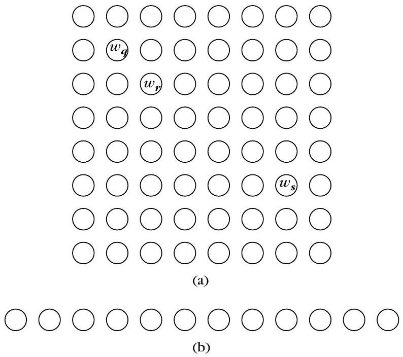
神經網路示意圖：左圖一條水平一維鏈的節點，右圖一個 6×5 二維網格的圓點陣列，兩圖都用黃色標出「勝者節點」、用淺綠色圈出「拓撲鄰域」，並用箭頭表示勝者與其鄰域節點被一起拉向一個藍色輸入資料點。SOM 的勝者更新規則（式 15.26）與基本競爭式的主要差別是？
SOM 中 $Q_{j}(t)$ 隨迭代通常如何變化？
Example 15.4 中，兩個群 $C_{1}$、$C_{2}$ 由兩個均值 $[0.3,0.3,0.3]^{T}$ 與 $[0.7,0.7,0.7]^{T}$、共變 $0.01 I$ 產生。收斂後 SOM 的代表會如何分布？
監督式學習向量量化（Supervised Learning Vector Quantization）
▼有標籤的競爭式學習
監督式向量量化（supervised VQ，亦稱 LVQ1）是競爭式架構的監督式版本，常被用在向量量化（VQ）領域。這裡每個群被當成一個「類別」，且現有的向量都帶有已知類別標籤。令 $m$ 為類別數，監督式 VQ 使用 $m$ 個代表（每個類別一個），設法把它們放得讓每個類別「最理想地被表示」。它可從廣義競爭式學習推得：條件 (A)(B)(C) 與基本公共式相同，只修改條件 (D)。
按標籤修正方向（式 15.27）
當 $\boldsymbol{w}_{j}$ 在 $\boldsymbol{x}$ 上勝出時，更新取決於它「勝得對不對」：
$$\boldsymbol{w}_{j}(t)= \begin{cases}\boldsymbol{w}_{j}(t-1)+\eta(t)\left(\boldsymbol{x}-\boldsymbol{w}_{j}(t-1)\right), & \text { if } \boldsymbol{w}_{j} \text { correctly wins on } \boldsymbol{x} \\ \boldsymbol{w}_{j}(t-1)-\eta(t)\left(\boldsymbol{x}-\boldsymbol{w}_{j}(t-1)\right), & \text { if } \boldsymbol{w}_{j} \text { wrongly wins on } \boldsymbol{x} \\ \boldsymbol{w}_{j}(t-1), & \text { otherwise }\end{cases}$$
已知類別標籤決定了 $\boldsymbol{w}_{j}$ 的移動方向：
- 勝出且 $\boldsymbol{x}$ 屬於第 $j$ 類 → $\boldsymbol{w}_{j}$ 移向 $\boldsymbol{x}$（接近）；
- 勝出但 $\boldsymbol{x}$ 不屬於第 $j$ 類 → $\boldsymbol{w}_{j}$ 遠離 $\boldsymbol{x}$（$-$ 號）；
- 其他代表維持不變。
換句話說，若代表「錯把別類的資料贏了」，就被推離那筆資料，好讓位給正確的代表。這類演算法已用於語音辨識與 OCR（光學字元辨識）等應用。原內文也提到，一個類別可用多個代表來表示變體（[Koho 89]）。
監督式 VQ（LVQ1）與基本公共競合式的主要差別是？
若 $\boldsymbol{w}_{j}$ 勝出但 $\boldsymbol{x}$ 並不屬於第 $j$ 類，則 $\boldsymbol{w}_{j}$ 會如何？
監督式 VQ 使用了多少個代表？
Binary Morphology Clustering（BMCA）
▼這一類演算法適用於「簇無法用單一代表點好好表示」的情況。想法是：先把資料集 $X$ 對應（mapping）到一個離散的集合 $S$，讓分群變得好做；接著用 $S$ 裡辨識出來的簇，當作在 $X$ 裡找簇的「嚮導」。這個做法叫作二分形態學分群演算法（BMCA），原文把它拆成四個主階段：第一階段把資料離散化、得到一個離散二元集合（discrete binary set，DB set）；第二階段對它套用形態學運算子（opening／closing）；第三階段找出 $S$ 裡形成的簇；第四階段再回頭把 $X$ 裡的原來向量指認到這些簇。
15.4.1 離散化（Discretization）
第一步是正規化：把每個向量 $\boldsymbol{x} \in X$ 的所有座標壓到 $[0, r-1]$，其中 $r$ 是由使用者給的參數。作法如下（式 15.28）：
$$ y_{ij}=\frac{x_{ij}-\min_{q=1,\ldots,N} x_{qj}}{\max_{q=1,\ldots,N} x_{qj}-\min_{q=1,\ldots,N} x_{qj}}\,(r-1), \quad i=1,\ldots,N,\; j=1,\ldots,l $$
這裡 $x_{ij}$ 是第 $i$ 個向量的第 $j$ 個座標。正規化後的集合記為
$$ X^{\prime}=\left\{\boldsymbol{y}_{i} \in [0,r-1]^{l},\; i=1,\ldots,N\right\} $$
接著把 $[0,r-1]^{l}$ 切成 $r^{l}$ 個超立方體：對每個座標，把 $[0,r-1]$ 分成 $r$ 個子區間（見 Figure 15.13）。每個超立方體用它的「左下角座標」來標識，$r$ 就是「解析度」。最後取 $\boldsymbol{y}_{i}$ 每個座標的整數部分，得到
$$ z_{ij}=\lfloor y_{ij} \rfloor, \quad i=1,\ldots,N,\; j=1,\ldots,l $$
其中 $\lfloor \cdot \rfloor$ 表示整數部分。把所有 $z_{i}$ 去掉重複後得到集合 $S$，$S$ 的每個元素對應一個「非空」的超立方體，這就是離散二元集合。
15.4.2 形態學運算（Morphological Operations）
形態學運算只用在「座標為離散值」的集合上，最基礎的是膨脹（dilation）與侵蝕（erosion），再由此定義開運算（opening）與閉運算（closing）。設 $Y,T \subseteq Z^{l}$，$\boldsymbol{s} \in Z^{l}$。$Y$ 對 $\boldsymbol{s}$ 的平移（式 15.29）為
$$ Y_{\boldsymbol{s}}=\{\boldsymbol{t} \in Z^{l}: \boldsymbol{t}=\boldsymbol{x}+\boldsymbol{s},\; \boldsymbol{x} \in Y\} $$
定義 1（膨脹）：$Y$ 對 $T$ 的膨脹記作 $Y \oplus T$（式 15.30），
$$ Y \oplus T=\{\boldsymbol{e} \in Z^{l}: \boldsymbol{e}=\boldsymbol{x}+\boldsymbol{s},\; \boldsymbol{x} \in Y,\; \boldsymbol{s} \in T\} $$
等價地，$Y \oplus T$ 就是把 $Y$ 用 $T$ 的所有元素分別平移，再取所有結果的聯集。白話說：膨脹讓形狀「長胖」。定義 2（侵蝕）：$Y \ominus T$（式 15.31）為
$$Y \ominus T=\{\boldsymbol{f} \in Z^{l}: \boldsymbol{x}=\boldsymbol{f}+\boldsymbol{s},\; \boldsymbol{x} \in Y,\; \forall \boldsymbol{s} \in T\} $$
等價地，侵蝕是把 $Y$ 用 $T$ 的所有元素平移後取交集——形狀會被「削瘦」。在兩種運算中 $T$ 都叫結構元素（structuring element），通常是超立方體形狀（見 Figure 15.14），也可以是超球體。例如 $3\times3$ 結構元素 $T=\{(-1,-1),(-1,0),(-1,1),(0,-1),(0,0),(0,1),(1,-1),(1,0),(1,1)\}$，共有 9 個點。
定義 3（開運算）：先侵蝕再膨脹（式 15.32）
$$ Y_{T}=(Y \ominus T) \oplus T $$
定義 4（閉運算）：先膨脹再侵蝕（式 15.33）
$$ Y^{T}=(Y \oplus T) \ominus T $$
一般來說 $Y \neq Y_{T}$ 且 $Y \neq Y^{T}$。開運算會把 $Y$ 邊界上不必要的細節「削平」；閉運算則把 $Y$ 中的空隙「填滿」。兩者都傾向產生比原本更簡單的形狀：只要孤立點或空洞不大於結構元素，opening／closing 就能很有效地去掉它們。
15.4.3 在離散二元集合中定簇
對離散集 $S \subseteq\{0,1,\ldots,r-1\}^{l}$，先定義點 $\boldsymbol{x}$ 的鄰域
$$ V(\boldsymbol{x})=\{\boldsymbol{y} \in S-\{\boldsymbol{x}\}: d(\boldsymbol{x},\boldsymbol{y}) \le d_{q}\} $$
其中 $d$ 是任一種距離度量，$d_{q}$ 是距離門檻；再給 $\theta$ 為鄰域密度的門檻——當 $V(\boldsymbol{x})$ 至少含 $\theta$ 個 $S$ 的點，就叫它「稠密（dense）」。令 $U(\boldsymbol{x})$ 為 $\boldsymbol{x}$ 的「立即鄰域」，即到 $\boldsymbol{x}$ 的歐氏距離小於等於 $\sqrt{l}$ 的所有點。離散值集合分簇演算法（CDADV）大致是：重複挑一個未處理的點 $\boldsymbol{x}$，若其鄰域夠稠密，就建立新簇並納入所有能經由「立即鄰域」序列連到 $\boldsymbol{x}$ 的點；否則就只把 $\boldsymbol{x}$ 標記為已處理。當簇之間離得夠開時它表現良好；若有少數離群點夾在簇之間，可先用較低的門檻 $\theta_{1} \le \theta$ 挑出「稀疏」點剔除，再對剩下的 $S'$ 跑 CDAC，最後把被剔除的點指派到 $S'$ 中距離它最近的點所屬的簇。
15.4.4 指派特徵向量回簇
設 $S$ 是對 $X$ 施加開閉運算後的離散集，$C_{1}',\ldots,C_{m}'$ 是 $S$ 裡由 CDAC 找出的簇。最後階段要把 $X$ 對應成 $m$ 個簇 $C_{1},\ldots,C_{m}$。分兩步：先處理 $[\boldsymbol{y}] \in S$ 的向量——$[\boldsymbol{y}]$ 屬於 $C_{i}'$ 就把 $\boldsymbol{x}$ 分給 $C_{i}$；剩下沒被指派到 $X-X'$ 的點，則指派到離它最近的簇 $C_{j}$。
15.4.5 演算法架構與參數敏感性
完整 BMCA 為：第 1 階段離散化 $X$ 得 $S$；第 2 階段先對 $S$ 用結構元素 $T$ 做開運算得 $S_{T}$，再對 $S_{T}$ 做閉運算得 $S_{1}$；第 3 階段用 CDAC 找出 $S_{1}$ 的簇；第 4 階段依 $S_{1}$ 的簇在 $X$ 上定簇。注意第 2 階段不一定非「先開後閉」，也可只開、只閉或反過來。
BMCA 對參數 $r$ 與結構元素 $T$ 很敏感，可能高估或低估真正的簇數。但實務上常假設「$X$ 真有簇時，在某個參數範圍內簇數保持不變」：對不同 $r$ 與不同邊長 $a$ 的方形結構元素跑前三個階段，畫出「簇數 vs $r、a$」，選 $(r,a)$ 平面中簇數不變的最寬區域的中點作為最終參數，再用這些參數跑完整 BMCA。缺點是運算量大（要試很多 $r,a$ 組合），可固定其中一個參數只調另一個。當 $X$ 的簇既緊密又離得開時，isodata 表現常比 BMCA 好；反之 BMCA 佔上風。例如 Example 15.8 中 1000 個向量分布於兩個半圓環，BMCA 用 $3\times3$ 結構元素、$r=25$，兩簇被清楚分開，500 點中只誤分 2 點、另 500 點只誤分 1 點，正確率 99.7%，遠優於 isodata。
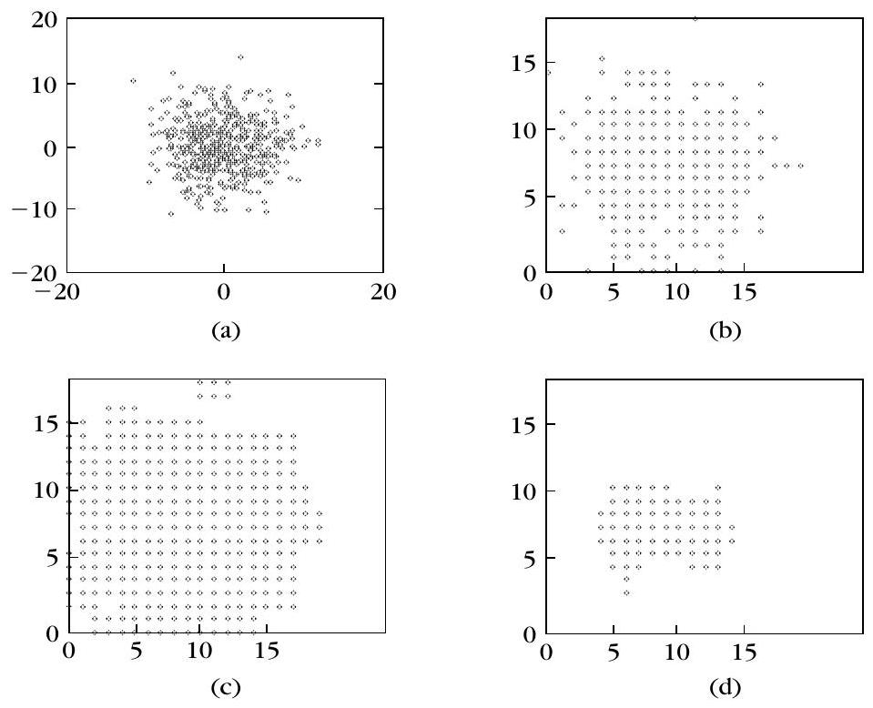
BMCA 的第一個主階段在做什麼？
在形態學運算中，「開運算」（opening）$Y_T$ 的定義是？
關於 BMCA 中離散二元集合 $S$ 與原資料 $X$ 的關係，何者正確？
Example 15.8 中 BMCA 的分類正確率約為何？
Boundary Detection（邊界偵測）
▼以邊界代替代表點
先前多數演算法用「向量到簇的距離」或「簇到簇的距離」定簇。這一節換個思路：不是找代表點，而是估計把簇隔開的邊界曲面（boundary surface）。此方法適合簇相當緊密的狀況——把緊密的簇看成 $l$ 維空間裡稠密的區域，區域之間被稀疏的向量隔開。因此只要先給一個初始邊界，再把它逐步移到「向量稀疏」的區域即可。
兩簇情形與代價函數
先看兩個簇。設 $g(\boldsymbol{x};\boldsymbol{\theta})$ 描述兩簇之間的決策邊界，$\boldsymbol{\theta}$ 是描述該曲面的未知參數向量。若對某個 $\boldsymbol{x}$ 有 $g(\boldsymbol{x};\boldsymbol{\theta})\gt 0$，則 $\boldsymbol{x}$ 屬於第一個簇 $C^{+}$；否則屬於 $C^{-}$。我們的目標是求出 $\boldsymbol{\theta}$。與監督式判別不同，這裡沒有類別標籤，$\boldsymbol{\theta}$ 的調整只依賴 $X$ 各向量到邊界的距離。為此定義一個要最大化的代價函數 $J$（式 15.34）：
$$ J(\boldsymbol{\theta})=\frac{1}{N}\sum_{i=1}^{N} f^{2}\big(g(\boldsymbol{x}_{i};\boldsymbol{\theta})\big)-\Big(\frac{1}{N}\sum_{i=1}^{N} f\big(g(\boldsymbol{x}_{i};\boldsymbol{\theta})\big)\Big)^{2q} $$
其中 $q$ 是正常數整數，$f(x)$ 是單調遞增的對稱壓縮函數（式 15.35）：
$$ \lim_{x\to+\infty} f(x)=1,\quad \lim_{x\to-\infty} f(x)=-1,\quad f(0)=0 $$
常見選擇是雙曲正切 $f(x)=\frac{1-e^{-x}}{1+e^{-x}}$。(15.34) 兩項的最大值都為 1，且 $J(\boldsymbol{\theta})$ 非負（式 15.36）。第一項在「所有 $\boldsymbol{x}$ 都離邊界夠遠」時接近 1；但若所有點都躲在邊界的同一側，第一項也會很大——第二項的作用就是懲罰這種無意義的解（此時第二項接近 1、$J$ 趨近 0），$q$ 控制第二項對 $J$ 的影響。
中間情形與演算法
當邊界正好夾在兩個稠密區域中間時，第二項對 $J$ 的貢獻很小。例如決策面是超平面 $H$，正負兩側各有 $k$ 個點距它 $a$ 與 $-a$：此時第二項變成 0，第一項等於 $f^{2}(a\|\boldsymbol{\theta}\|)$。接著用最速上升（steepest ascent）求 $\boldsymbol{\theta}$ 的最優值：對 $\boldsymbol{\theta}$ 的每個座標
$$ \theta_{j}(t+1)=\theta_{j}(t)+\mu\,\frac{\partial J(\boldsymbol{\theta})}{\partial \theta_{j}}\Big|_{\theta_{j}=\theta_{j}(t)} $$
展開即得式 (15.37)（利用鏈鎖律展開 $\partial f/\partial g$ 與 $\partial g/\partial\theta_{j}$）。對超平面 $g(\boldsymbol{x};\boldsymbol{\theta})=\boldsymbol{w}^{T}\boldsymbol{x}+w_{0}$，$\boldsymbol{\theta}\equiv[\boldsymbol{w},\,w_{0}]^{T}$，且 $\partial g/\partial w_{j}=x_{j}\;\,(j=1,\ldots,l)$、$\partial g/\partial w_{0}=1$，更新式可直接由 (15.37) 得出。
邊界偵測演算法（BDA）
- 選初始值 $\boldsymbol{\theta}(0)$。
- 用 (15.34) 計算 $J(\boldsymbol{\theta}(0))$，令 $t=0$。
- 重複：$t=t+1$，用 (15.37) 更新 $\boldsymbol{\theta}(t)$，再用 (15.34) 算 $J(\boldsymbol{\theta}(t))$，直到 $\big|\frac{J(\theta(t+1))-J(\theta(t))}{J(\theta(t))}\big|\lt \varepsilon$。
- $\boldsymbol{\theta}$ 的座標不應無界成長；超平面情形可加上界 $\|\boldsymbol{\theta}\|\le a$。
多簇與終止條件
當 $X$ 之下有超過兩個簇時，用階層式（hierarchical）流程：先用 BDA 把 $X$ 切成 $X^{+},X^{-}$，再各自用 BDA 續切（得到 $X^{+-},X^{++}$ 與 $X^{--},X^{-+}$），如此遞迴到特定終止條件為止，類似 Chapter 4 的神經網路設計。若簇 $C$ 內沒有稀疏區，切分會得到低 $J(\boldsymbol{\theta})$，因此可用門檻 $b$：$J(\theta) \le b$ 時不接受切分；$b$ 越小定義出的簇越多，$b$ 越大則接受較少的簇但邊界更清楚。另一種做法 OptiGrid 用合適的超平面格點來分簇（見 [Hinn 99]）。
Boundary Detection 的核心思路為何？
代價函數 $J(\boldsymbol{\theta})$（式 15.34）中，第二項 $(\frac{1}{N}\sum f)^2q$ 的作用是什麼？
式 (15.35) 描述的「squashing 函數」$f(x)$ 具備哪個性質？
BDA 的迭代停止條件為何？
Valley-Seeking（谷地尋找分群）
▼把簇看成機率密度的峰
這個方法與上一節的「邊界偵測」同一思路。設 $p(\boldsymbol{x})$ 是 $X$ 中向量分布的密度函數。另一種看待分群的辦法：把簇看成 $p(\boldsymbol{x})$ 的峰（peaks），峰之間被谷地（valleys）隔開。於是我們去找這些谷，試著把簇的邊界移到谷地裡。以下是一個迭代、計算上有效率的演算法 [Fuku 90]。
局部視窗與符號
再設 $V(\boldsymbol{x})$ 為 $\boldsymbol{x}$ 的局部區域（式 15.38）：
$$ V(\boldsymbol{x})=\{\boldsymbol{y} \in X-\{\boldsymbol{x}\}: d(\boldsymbol{x},\boldsymbol{y}) \le a\} $$
$a$ 是使用者定義的參數。距離可取（式 15.39）
$$ d(\boldsymbol{x},\boldsymbol{y})=(\boldsymbol{y}-\boldsymbol{x})^{T} A\,(\boldsymbol{y}-\boldsymbol{x}) $$
其中 $A$ 是對稱正定矩陣（取 $A=I$ 就是平方歐氏距離）。設 $k_{j}^{i}$ 表示第 $j$ 個簇、落在 $V(\boldsymbol{x}_{i})$ 內（不含 $\boldsymbol{x}_{i}$ 自己）的向量數目；$c_{i} \in\{1,\ldots,m\}$ 表示 $\boldsymbol{x}_{i}$ 目前所屬的簇。
Valley-Seeking 演算法
- 固定 $a$ 與簇數 $m$，先給 $X$ 一個初始分簇。
- 重複：
- 對 $i=1$ 到 $N$：找 $j$ 使 $k_{j}^{i}=\max_{q=1,\ldots,m} k_{q}^{i}$，並設 $c_{i}=j$。
- 對 $i=1$ 到 $N$：把 $\boldsymbol{x}_{i}$ 指派到簇 $C_{c_{i}}$。
- 直到不再有向量被重新指派（no reclustering）為止。
與 Parzen 視窗的關聯
- 此演算法與 Chapter 2 的 Parzen 視窗 pdf 估計很類似：它在 $\boldsymbol{x}$ 處移動一個視窗 $d(\boldsymbol{x},\boldsymbol{y}) \le a$，數一數窗內各簇的點，再把 $\boldsymbol{x}$ 指派給窗內點最多的簇（即局部 pdf 密度最高的簇）——這相當於把邊界從「贏家」簇移開。
- 它是模式尋找（mode seeking）演算法：若初始安排的簇太多，某些簇可能最後變成空的。
Example 15.9
考慮 Figure 15.19，$X$ 有 10 個向量：$\boldsymbol{x}_{1}=[0,1]^{T}$、$\boldsymbol{x}_{2}=[1,0]^{T}$、$\boldsymbol{x}_{3}=[1,2]^{T}$、$\boldsymbol{x}_{4}=[2,1]^{T}$、$\boldsymbol{x}_{5}=[1,1]^{T}$、$\boldsymbol{x}_{6}=[5,1]^{T}$、$\boldsymbol{x}_{7}=[6,0]^{T}$、$\boldsymbol{x}_{8}=[6,2]^{T}$、$\boldsymbol{x}_{9}=[7,1]^{T}$、$\boldsymbol{x}_{10}=[6,1]^{T}$，並用平方歐氏距離。
- (a) 初始分兩簇，決策線 $b_{1}$ 分開它們。取 $a=1.415$。第一輪迭代後，$\boldsymbol{x}_{4}$ 被派到「$x$」那簇——這等於把兩簇之間的決策曲線移到兩塊高密度區中間的谷地。
- (b) $X$ 不變，但初始分簇中 $\boldsymbol{x}_{6}$ 被派到「$x$」簇；可用 $b_{1},b_{2},b_{3}$ 三條線分簇。第一輪後 $\boldsymbol{x}_{4}$ 歸「$x$」、$\boldsymbol{x}_{6}$ 歸「o」，即 $b_{1},b_{2}$ 被移到谷地取代 $b_{3}$。
- (c) 初始三分簇，但第一輪後最後只剩兩簇：雖然初始設了三簇，演算法最後收斂成兩簇——因為只有兩座峰。各案例中決策曲面都移到兩峰之間的谷地。
演算法對參數 $a$ 很敏感，應對不同 $a$ 多次執行並小心解讀結果。另一個類似想法是直接把每個 $\boldsymbol{x}_{i}$ 沿 $\partial p(\boldsymbol{x})/\partial\boldsymbol{x}$ 的方向移動 $\eta\, \partial p/\partial \boldsymbol{x}$（$\eta$ 為參數），反覆迭代後同簇的點會收斂到同一空間點，即「移動峰」的分群。
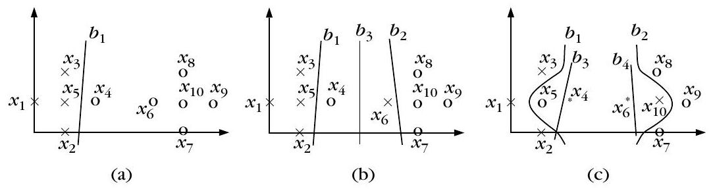
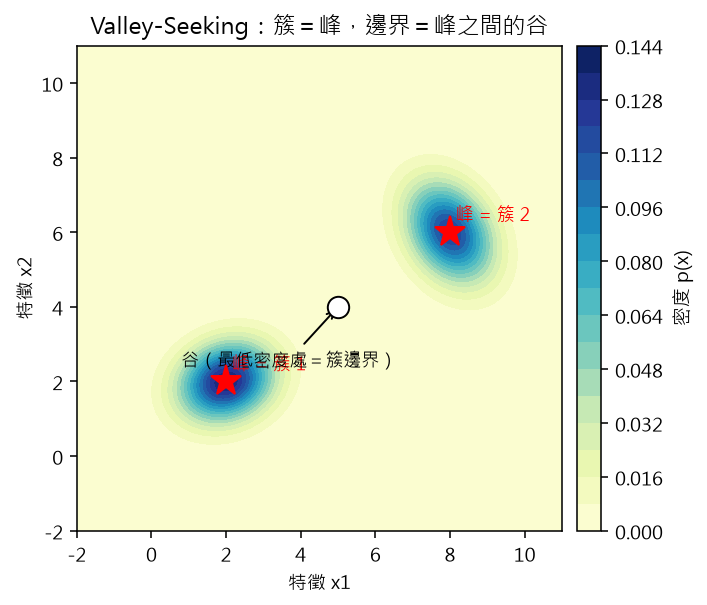
畫一張 2D 密度等高線圖：兩個高斯峰（以紅色星號標記為「簇 1」「簇 2」），兩峰之間的低密度區域標出一條「谷」（白色圓點並標註「谷＝簇邊界」），用青藍到黃綠漸層等高線表現密度高低，標題註明「簇＝峰，邊界＝峰之間的谷」。Valley-Seeking 把簇視為 $p(\boldsymbol{x})$ 的什麼？
在式 (15.38) 的局部視窗 $V(\boldsymbol{x})$ 中，參數 $a$ 的作用是什麼？
Example 15.9 中，$\boldsymbol{x}_{4}=[2,1]^{T}$ 在 (a) 第一輪後被派到哪一簇？
為什麼 (c) 初始設三個簇，最後卻只留下兩個？
Branch and Bound（分支界限分群）
▼「Branch and Bound（分支界限法）」在第五章已提過：它可以在不做窮舉搜尋的前提下，依某個預先設定的成本函數（criterion function）$J$，算出組合問題的全域最佳解。它適用的對象是「單調（monotonic）準則」：也就是說，若 $X$ 中已有 $k$ 個向量被指派到叢集，再多指派一個向量到某個叢集時，並不會讓 $J$ 的值變小。
先用一個例子建立直覺。假設目標是在準則 $J$ 之下，找出把「3 個向量分進 2 個叢集」的最佳方式。為此我們建一棵分類樹（classification tree）：每個節點用一個由 3 個符號組成的字串來描述，符號只能是 $1$、$2$、$x$。例如字串「122」代表第一個向量分到叢集 1、另外兩個分到叢集 2；而「1xx」代表第一個向量已分到叢集 1、其餘兩個尚未指派（$x$ 表未指派）。注意第一個向量固定先指派到叢集 1。樹的每個葉節對應一個真正的分群，葉節的數量正好等於「把 3 個向量分進 2 叢集」的所有可能分群數；其餘節點都叫做「部分分群」（partial clustering），也就是還有向量沒被指派。
計算節省的來源
假設在某一步，目前已知的最佳界限是 $B$。若某個節點對應的 $J$ 值已經大於 $B$，就不再往它底下的所有後代展開搜尋——這正是省力的地方。為什麼可以這樣？因為準則單調：既然這個節點本身都已 $\gt B$，它的所有後代只會再繼續加向量、$J$ 只會更大（不減小），更不可能勝過 $B$。
正式表示法與公式
令 $\mathcal{C}_r=[c_1,\ldots,c_r]$、$1\le r\le N$ 表示一個部分分群，其中 $c_i\in\{1,2,\ldots,m\}$，$c_i=j$ 表示向量 $\boldsymbol{x}_i$ 屬於叢集 $C_j$，而 $\boldsymbol{x}_{r+1},\ldots,\boldsymbol{x}_N$ 尚未指派。準則函數與叢集均值定義為
$$J(\mathcal{C}_r)=\sum_{i=1}^{r}\|\boldsymbol{x}_i-\boldsymbol{m}_{c_i}(\mathcal{C}_r)\|^{2} \tag{15.40}$$ $$\boldsymbol{m}_{j}(\mathcal{C}_r)=\frac{1}{n_j(\mathcal{C}_r)}\sum_{\{q=1,\ldots,r:\,c_q=j\}}\boldsymbol{x}_q,\quad j=1,\ldots,m \tag{15.41}$$其中 $n_j(\mathcal{C}_r)$ 是在前 $r$ 個向量中、屬於叢集 $C_j$ 的向量個數。注意：均值的計算只考慮前 $r$ 個向量。我們設 $J(\mathcal{C}_1)=0$。可以驗證：
$$J(\mathcal{C}_{r+1})=J(\mathcal{C}_r)+\Delta J(\mathcal{C}_r) \qquad (15.42)$$其中 $\Delta J(\mathcal{C}_r)\ge 0$，代表「指派下一個向量」時 $J$ 的增加量。更精確地，若第 $r+1$ 個向量被指派到叢集 $C_j$，則
$$\Delta J(\mathcal{C}_r)=\frac{n_j(\mathcal{C}_r)}{n_j(\mathcal{C}_r)+1}\|\boldsymbol{x}_{r+1}-\boldsymbol{m}_j(\mathcal{C}_r)\|^2 \tag{15.43}$$$\mathcal{C}_N^{*}=[c_1^{*},\ldots,c_N^{*}]$ 記為最佳分群，演算法從 $r=1$、$B=+\infty$ 出發。
演算法怎麼走
BBC 演算法從樹的根節點一路往下，直到碰到：(i) 一個葉節點，或 (ii) 一個成本 $J$ 已大於 $B$ 的節點 $q$。在情形 (i)，若該葉對應分群的成本小於 $B$，就把 $B$ 更新成這個新成本，並把它記為目前最佳分群；在情形 (ii)，從 $q$ 分支出去的所有後續分群全部不再考慮（稱為 exhausted／被排除），然後回溯到 $q$ 的父節點去展開另一條路徑。若父節點的路徑也都走完，就再往上回溯到祖父節點。當所有路徑都已明確或隱含地被考慮過，演算法才停止。開始時演算法會先從根走一條完整路徑到葉，用那個葉的成本當起始 $B$。
優缺點
- 上界 $B$ 越緊，就能在不展開的狀況下排除越多路徑，計算越省（可用更緊的下界估計來替代 $J(\mathcal{C}_r)$，排除更多分群）。
- 最大缺點：即使 $N$ 不大（moderate），所需的時間也可能巨大且不可預測。可行對策是跑固定時間後就取當時的最佳分群——但這樣就不能再保證全域最佳了。
Branch and Bound 在什麼條件下能保證找出分群的全域最佳解？
演算法進行中，若某節點的成本值 $J(\mathcal{C}_r)$ 已大於目前最佳界限 $B$，應怎麼做？
（續前一題）「下一個向量指派」所造成的 $\Delta J(\mathcal{C}_r)$（式 15.43）之值是？
Simulated Annealing（模擬退火）
▼Simulated Annealing（模擬退火）是一個全域最佳化演算法：在特定條件下，它能以「機率」保證找到使成本函數 $J$ 最小化的全域最佳解。它由 Kirkpatrick 等人提出（見 [Kirk 83]），靈感來自凝聚態物理。與傳統只允許「朝讓 $J$ 變小的方向」調整參數的演算法不同，模擬退火允許某些暫時讓 $J$ 增加的移動。理由是：唯有允許暫時變差，才有機會跳出某個局部極小的「吸引力區域」，避免被困在山谷。
溫度 $T$ 與基本流程
這個方法最關鍵的參數是溫度 $T$，它是物理系統溫度的類比。演算法從高溫開始，再逐步降溫。所謂一個 sweep，就是停留在某一溫度 $T$ 所需的時間，好讓系統進入「熱平衡」狀態。令 $T_{\max}$ 為初始溫度、$\mathcal{C}_{\mathrm{init}}$ 為初始分群、$\mathcal{C}$ 為目前分群、$t$ 為目前的 sweep。
- 設定 $T=T_{\max}$、$\mathcal{C}=\mathcal{C}_{\mathrm{init}}$、$t=0$。
- 重複（外層）：$t=t+1$；再重複（內層）：
- 計算 $J(\mathcal{C})$；隨機挑一個向量改派到別的叢集，得到新分群 $\mathcal{C}'$；
- 計算 $J(\mathcal{C}')$。若 $\Delta J=J(\mathcal{C}')-J(\mathcal{C})\lt 0$，直接接受 $\mathcal{C}=\mathcal{C}'$；
- 否則，以機率 $P(\Delta J)=e^{-\Delta J / T}$ 接受 $\mathcal{C}=\mathcal{C}'$。
- $T=f(T_{\max},t)$ 降溫；直到 $T$ 降到預定的 $T_{\min}$。
這個「變差就以機率 $e^{-\Delta J/T}$ 接受」的判斷，就是 Metropolis 式接受準則。直覺上：當 $T$ 很高，$T\to+\infty$ 時 $P(\Delta J)\simeq 1$，幾乎所有移動都被允許，因此可以到處亂跑、跳出局部極小；當 $T$ 很低，$T\to 0$ 時這類「變差」移動的機率趨近 $0$，系統就逐漸鎖定在低 $J$ 的分群。把 $T$ 維持為正，就是確保永遠保有非零機率逃出局部極小。舉例：取 $T=100$、$\Delta J=5$，則接受機率 $P=e^{-5/100}=e^{-0.05}\approx 0.95$，很樂意接受變差的移動；若 $\Delta J=100$，$P=e^{-1}\approx 0.37$，接受意願明顯下降。
兩個實務難點
- 判定「熱平衡」：沒有簡單做法。常見啟發式是：連續 $k$ 次隨機重新指派後 $\mathcal{C}$ 都不變，就認為已平衡（$k$ 通常到數千的量級）。
- 降溫排程（schedule）：若取
則此排程能以機率 1 收斂到全域均衡（見 [Gema 84]），但太慢；[Szu 86] 給出較快的排程。整體而言，此方法最主要的缺點仍是需要大量計算量。
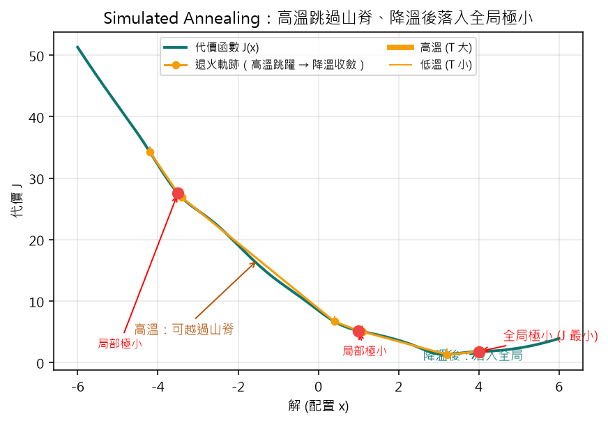
畫一張一維代價函數 J(x) 曲線圖，曲線有多個局部極小與一個全局極小（以紅點標示），並疊加一條橙色模擬退火軌跡：先在左側高溫時向上跳越山脊、隨後溫度逐漸下降，最後落入全局極小；沿軌跡以粗細不同的線段表示溫度由高到低，標題說明「高溫跳過山脊、降溫後落入全局極小」。模擬退火允許「暫時讓 $J$ 增加的移動」，其目的是？
當溫度 $T$ 非常高（$T\to+\infty$）時，接受一個較差移動的機率 $P(\Delta J)=e^{-\Delta J/T}$ 會？
下列哪一個降溫排程，能以機率 1 收斂到全域均衡？
Deterministic Annealing（確定性退火）
▼Deterministic Annealing（確定性退火）是結合模擬退火優點與確定型分群方法的混合參數方法。與模擬退火靠隨機擾動目前分群來搜尋不同，確定性退火沒有隨機擾動；取而代之的是把成本函數稍微改寫，以納入參數 $\beta=1/T$（$T$ 的定義同模擬退火）。它的理論對應材料溫度改變時的「相變（phase transition）」現象 [Rose 91]。
有效成本函數
此框架採用一組代表點 $\boldsymbol{w}_j,\ j=1,\ldots,m$（$m$ 固定），目標是把它們放在「恰當位置」使某個失真最小化。據此構造下面的「有效」成本函數 $J$ [Rose 91]：
$$J=-\frac{1}{\beta}\sum_{i=1}^{N}\ln\left(\sum_{j=1}^{m} e^{-\beta\,d(\boldsymbol{x}_i,\boldsymbol{w}_j)}\right) \qquad (15.45)$$其中 $m$ 是叢集數。對代表點 $\boldsymbol{w}_r$ 求 $J$ 的偏導並令為零，得
$$\frac{\partial J}{\partial\boldsymbol{w}_r}=\sum_{i=1}^{N}\left(\frac{e^{-\beta\,d(\boldsymbol{x}_i,\boldsymbol{w}_r)}}{\sum_{j=1}^{m}e^{-\beta\,d(\boldsymbol{x}_i,\boldsymbol{w}_j)}}\right)\frac{\partial d(\boldsymbol{x}_i,\boldsymbol{w}_r)}{\partial\boldsymbol{w}_r}=\mathbf{0} \tag{15.46}$$括號裡的那一項取值在 $[0,1]$，而且對同一個 $\boldsymbol{x}_i$ 把 $j$ 求和恰好等於 $1$，因此可把它解釋為「$\boldsymbol{x}_i$ 屬於叢集 $C_r$ 的機率」$P_{ir}$。於是上式可寫成
$$\sum_{i=1}^{N}P_{ir}\,\frac{\partial d(\boldsymbol{x}_i,\boldsymbol{w}_r)}{\partial\boldsymbol{w}_r}=\mathbf{0} \qquad (15.47)$$相變與分裂
假設 $d(\boldsymbol{x},\boldsymbol{w})$ 對固定的 $\boldsymbol{x}$ 是 $\boldsymbol{w}$ 的凸函數。當 $\beta=0$ 時，所有 $P_{ij}=1/m$（均勻），式 (15.47) 變成
$$\sum_{i=1}^{N}\frac{\partial d(\boldsymbol{x}_i,\boldsymbol{w}_r)}{\partial\boldsymbol{w}_r}=\mathbf{0} \tag{15.48}$$凸函數的和仍為凸，有唯一的最小值，可用任何梯度下降法求出；此時所有代表點都落到這個唯一全域極小，即整個資料集都被視為同一個叢集。隨著 $\beta$ 增大，會到達某個臨界值而發生相變（也就是機率 $P_{ir}$ 已「充分地偏離」均勻模型）：單一代表點不再能最佳表示資料，於是代表點分裂以在新階段對資料做最佳表示。$\beta$ 繼續增大，會發生新的相變、代表點再分裂。若把 $m$ 設得比「真實」叢集數更大，就確保演算法有能力正確表示資料；最壞狀況下，有些代表點會重合。
終止準則
當 $\beta$ 增大，$P_{ij}$ 從均勻模型逐步偏向「硬分群」模型：對每個 $\boldsymbol{x}_i$，某個 $P_{ir}\simeq 1$，其餘 $P_{ij}\simeq 0$。因此，「要求每個向量以接近 1 的機率被指派到某叢集」可作為演算法的終止條件。$\beta$ 增大的排程見 [Rose 91]；雖然模擬結果表現良好，但它不保證能到達全域均衡分群。
在確定性退火中，當 $\beta=0$ 時，所有 $P_{ij}$ 會等於？
式 (15.45) 括號內那一項（對某個 $\boldsymbol{x}_i$ 為 $P_{ir}$）在概念上代表什麼？
當 $\beta$ 增加到某個臨界值發生「相變（phase transition）」時，會發生什麼？
當 $\beta$ 增大趨向硬分群模型時，$P_{ij}$ 的變化是？
Clustering Using Genetic Algorithms（以遺傳演算法分群）
▼Genetic Algorithms（遺傳演算法）靈感來自達爾文的自然淘汰機制。它對問題的一個解族群（population）施加若干運算元，使新的族群相對舊族群、依某個預定準則函數 $J$ 而言更優。這個過程執行預定次數的迭代，最後輸出最後一個族群中找到的最佳解（有些做法輸出整個演化過程中的最佳解）。
一般而言，問題的解會被編碼（coded），運算元作用在編碼後的字串上；編碼方式對演算法的表現非常重要，不當的編碼可能導致差勁的表現。
三個基本運算元
最著名的三個運算元依序作用在當前族群上，是 reproduction（選擇）、crossover（交配）、mutation（突變）：
- reproduction：以機率確保——在目前族群中越好（差）的解，在下一代裡複製的份數越多（少）。
- crossover：作用在 reproduction 之後產生的暫代族群上。它隨機選取一對解，在隨機的位置把它們切開，再交換它們的後半段。
- mutation：在 reproduction 與 crossover 之後作用。它隨機選取某個解的某個元素，以某個機率把它改變掉。最後這個運算元可看作「跳出局部極小」的手段。
除編碼之外，其他參數也很關鍵：族群解個數 $p$、選取兩解做交配的機率、以及某元素被突變的機率。
適合硬分群的簡單例子
假設叢集數 $m$ 固定。第一步是決定「如何編碼一個解」。一種簡單（但不唯一）的方式是用代表點來形成下列字串：
$$\left[\boldsymbol{w}_{1},\boldsymbol{w}_{2},\ldots,\boldsymbol{w}_{m}\right] \qquad (15.49)$$或更細地寫出每個座標：
$$\left[w_{11},w_{12},\ldots,w_{1l},\ w_{21},w_{22},\ldots,w_{2l},\ \ldots,\ w_{m1},w_{m2},\ldots,w_{ml}\right] \qquad (15.50)$$我們採用的成本函數是
$$J=\sum_{i=1}^{N}u_{ij}\,d(\boldsymbol{x}_i,\boldsymbol{w}_j) \qquad (15.51)$$其中
$$u_{ij}=\begin{cases}1, & d(\boldsymbol{x}_i,\boldsymbol{w}_j)=\min_{k=1,\ldots,m}d(\boldsymbol{x}_i,\boldsymbol{w}_k)\\ 0, & \text{otherwise}\end{cases},\quad i=1,\ldots,N \tag{15.52}$$也就是 $u_{ij}=1$ 表示向量 $\boldsymbol{x}_i$ 指派給與它距離最短的那個代表點。對 hard clustering，crossover 的可切割點限定在「不同代表點之間」；mutation 則隨機選某個解向量裡的某個座標、隨機決定為它加上一個小亂數。
一種改良變體
另一種做法：在對目前族群施加 reproduction 之前，先把第 14 章的硬分群演算法跑 $p$ 次，每次以目前族群中的一個解作為初始狀態；$p$ 個收斂後的解構成真正要做 reproduction 的族群。因為這些解較有可能是成本函數的局部極小，效果通常更好，此改良曾被用在彩色影像量化應用中 [Sche 97]。
遺傳演算法三個基本運算元的執行順序是？
Crossover（交配）運算元的動作是？
式 (15.52) 中，$u_{ij}=1$ 的條件是？
mutation（突變）運算元的主要作用是？
Kernel 分群方法
▼從「最小包絡球」談起
想法來自第 5 章提過的最小包絡球（minimal-enclosure sphere）：在向量空間 $X$ 中，找一個體積最小的球，把所有資料點包起來。這裡採用更寬鬆的框架（Tax 1999）：允許部分資料點落在球外，讓問題對離群值（outlier）不那麼敏感。最佳化任務變得很像軟邊界 SVM（soft-margin SVM）：
$$\begin{gather*} \text{minimize } r^{2}+C \sum_{i=1}^{N} \xi_{i} \tag{15.53}\\ \text{subject to } \|\boldsymbol{x}_{i}-\boldsymbol{c}\|^{2} \le r^{2}+\xi_{i}, \quad \xi_{i} \ge 0, \; i=1,2,\ldots,N \tag{15.54–15.55} \end{gather*}$$
白話講：我們把球心設在 $\boldsymbol{c}$、半徑 $r$，希望包住絕大部分資料點；但有 $\xi_{i}\gt 0$ 的點可以落在球外，只是（藉由第 15.53 式的第二項）落在外面的點越少越好。
Lagrangian 與 Wolfe 對偶
解這個帶限制式問題（詳見第 3 章與附錄 C），其 Lagrange 函數與 KKT 條件可歸納出下面幾個性質（式 15.56–15.63 的結果）：
- 只有 $\lambda_{i} \neq 0$ 的點才對球心 $\boldsymbol{c}=\sum_{i} \lambda_{i} \boldsymbol{x}_{i}$ 有貢獻，這些點就是支撐向量（support vectors）。
- 滿足 $\xi_{i}\gt 0$ 的點（在球外）會得到 $\lambda_{i}=C$，稱有界支撐向量（bounded support vectors）。
- 落在球面上的點滿足 $0\lt \lambda_{i}\lt C$。
- 落在球內的點滿足 $\lambda_{i}=0$ 且 $\xi_{i}=0$。
Kernel Trick 在特徵空間 $H$ 做分聚
如同 SVM 的理論（第 4 章），只要把輸入空間 $X$ 經由 kernel trick 映射到高維 Hilbert 空間 $H$：$\boldsymbol{x} \mapsto \phi(\boldsymbol{x}) \in H$（Eq 15.67），所有只靠內積的形式都可改寫成 kernel 函數 $K(\boldsymbol{x}_{i},\boldsymbol{x}_{j})=\phi^{T}(\boldsymbol{x}_{i})\phi(\boldsymbol{x}_{j})$ 的形式，例對偶目標式 15.64 就變成
$$\max_{\lambda}\Big(\sum_{i} \lambda_{i} K(\boldsymbol{x}_{i},\boldsymbol{x}_{i})-\sum_{i,j}\lambda_{i}\lambda_{j} K(\boldsymbol{x}_{i},\boldsymbol{x}_{j})\Big)$$
映射後，$\phi(\boldsymbol{x})$ 離球心 $\boldsymbol{c}$ 的距離平方可用內積（kernel）算出（Eq 15.68–15.71）：
$$r^{2}(\boldsymbol{x}) = K(\boldsymbol{x},\boldsymbol{x})+\sum_{i,j}\lambda_{i}\lambda_{j}K(\boldsymbol{x}_{i},\boldsymbol{x}_{j}) - 2\sum_{i}\lambda_{i} K(\boldsymbol{x},\boldsymbol{x}_{i})$$
對任一支援向量 $\boldsymbol{x}_{i}$ 都成立 $r^{2}(\boldsymbol{x}_{i})=r^{2}$。
用輪廓線當作簇邊界
在原始空間 $X$ 中，集合 $\{\boldsymbol{x}: r(\boldsymbol{x})=r\}$（Eq 15.73）所構成的等距輪廓線，可被視為簇的邊界。這些輪廓線的形狀與所選 kernel 函數密切相關（見 Figure 15.21）：影像落在球上的點（$0\lt \lambda_{i}\lt C$）位於輪廓線上，影像在球內（$\lambda_{i}=0$）的點在輪廓內，影像在球外（$\lambda_{i}=C$）的點在輪廓外。
Adjacency matrix 判斷是否同簇
輪廓線本身還不足以定義簇。Ben 提出的幾何方法：若連結兩點的線段沒有穿過任何輪廓線，則這兩點屬於同一個簇；若線段穿過輪廓線，代表線上存在某點 $\boldsymbol{y}$，其影像落在最優球外（即 $r(\boldsymbol{y})\gt r$）。因此定義 adjacency matrix $A$，其元素
$$A_{ij}=\begin{cases}1 & \text{若 } \boldsymbol{x}_{i},\boldsymbol{x}_{j} \text{ 之間的線段上不存在任何點 } \boldsymbol{y} \text{ 使 } r(\boldsymbol{y})\gt r \; \tag{15.74}\\ 0 & \text{otherwise}\end{cases}$$
於是簇被定義為由 $A$ 所誘導圖形的連通分量（connected components）。後續有把這個架構配上模糊歸屬的擴充（Chia 2003），也有用最小包絡 hyperellipsoid 取代 hypersphere 的變種（Wang 2007）。
用內積改寫 k-Means
另一條路線：任何整個過程只用內積運算的分群演算法，都可以套用 kernel trick，如同 kernel PCA（第 6 章）。經典的 k-Means（及其變種）是典型例子（Schoelkopf 1998、Cama 2005、Giro 2002），因為 k-Means 的核心歐幾里得距離本身就是內積。把距離改寫成 kernel 形式後，就能在 $H$ 空間分群，得到非線性邊界。
優缺點
- 優點：因為映射的非線性，可找出任意形狀的簇。
- 缺點：結果對 kernel 的選擇與其參數非常敏感；而且運算量較大，不利於大型資料集。
（Figure 15.21：線段上穿越輪廓的點 $\boldsymbol{y}$，其影像位於最小包裝球之外。）
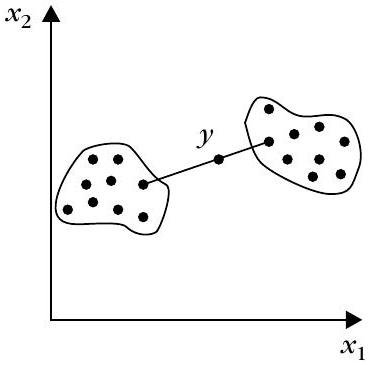
在最小包裝球框架中，真正決定球心位置的是哪些點？
要判斷兩個點是否屬於同一個簇，幾何方法是：
某個點的影像落在最優球之外（ξ_i>0），其對應的 λ_i 值為何？
為何 k-Means 能輕鬆套用 kernel trick？
密度式演算法（DBSCAN / DBCLASD / DENCLUE）
▼密度式演算法的共同哲學
在密度為基礎的框架中，簇被視為 $l$ 維空間中「資料點密度高」的區域。這類演算法大多不限制簇的形狀，因此能找出任意形狀的簇；也善於處理離群點，且時間複雜度低於 $O(N^{2})$，適合大型資料集。代表演算法是 DBSCAN、DBCLASD 與 DENCLUE，三者理念相同，但衡量「密度」的方式不同。
DBSCAN 的密度定義
DBSCAN 在資料點 $\boldsymbol{x}$ 周圍的密度，用落在「以 $\boldsymbol{x}$ 為球心、半徑為使用者參數 $\varepsilon$ 的超球 $V_{\varepsilon}(\boldsymbol{x})$」內的點數 $N_{\varepsilon}(\boldsymbol{x})$ 來估計。另外需要參數 $q$：某點要當「內部點」至少要有 $q$ 個鄰居。接著定義三種關係（見 Figure 15.22）：
- 直接密度可達（directly density reachable）：$\boldsymbol{y}$ 從 $\boldsymbol{x}$ 直接密度可達，若 (i) $\boldsymbol{y} \in V_{\varepsilon}(\boldsymbol{x})$ 且 (ii) $N_{\varepsilon}(\boldsymbol{x}) \ge q$。
- 密度可達（density reachable）：存在一串點 $\boldsymbol{x}_{1},\ldots,\boldsymbol{x}_{p}$，$\boldsymbol{x}_{1}=\boldsymbol{x}$、$\boldsymbol{x}_{p}=\boldsymbol{y}$，且每個 $\boldsymbol{x}_{i+1}$ 都從 $\boldsymbol{x}_{i}$ 直接密度可達。
- 密度連通（density connected）：存在第三者 $\boldsymbol{z}$，使 $\boldsymbol{x}$ 與 $\boldsymbol{y}$ 都由 $\boldsymbol{z}$ 密度可達。
當 $\boldsymbol{x},\boldsymbol{y}$ 兩點密度都夠高（$N_{\varepsilon}\ge q$）時密度可達是對稱的；反之要依靠第三點來「橋接」。
核心點、邊界點、噪音與簇
若一點至少含 $q$ 個鄰居就稱核心點（core point），否則叫非核心點。非核心點可能是邊界點（可由某核心點密度可達）或噪音點（不為任何點密度可達）。在此框架下，簇 $C$ 是滿足下列條件的非空子集：
- 若 $\boldsymbol{x}\in C$ 且 $\boldsymbol{y}$ 從 $\boldsymbol{x}$ 密度可達，則 $\boldsymbol{y}\in C$。
- $C$ 內任何兩點都密度連通。
不屬於任何簇的點集合就是噪音（noise）。DBSCAN 的兩條性質說明「簇可由任意核心點唯一決定」：
- 性質 1：若 $\boldsymbol{x}$ 是核心點，則所有由它密度可達的點集合 $D$ 是一個簇。
- 性質 2：若 $C$ 是簇且 $\boldsymbol{x}\in C$ 是核心點，則 $C$ 恰好等於由 $\boldsymbol{x}$ 密度可達的所有點。
演算法流程（針對 $X_{un}$ 尚未處理的點反覆挑選）：若挑到非核心點就先標成噪音；若挑到核心點則 $m\gets m+1$，找出所有由它密度可達的點指派給簇 $C_m$（連先前誤標為噪音的邊界點也一併納入）。
DBSCAN 的注意事項
- 結果受 $\varepsilon$ 與 $q$ 影響很大，需實驗調參；要能偵測出「密度最低」的那個簇。
- 用 $R^{*}$-tree 結構，對低維資料可做到 $O(N\log_2 N)$。
- 不適合簇間密度差異很大的情況，也不適合高維資料。
解決要手挑 $\varepsilon,q$ 的缺點，可用 OPTICS（Ankerst 1999），它產生一種密度排序、內含資料集的階層簇結構，執行時間約為 DBSCAN 的 1.6 倍。
DBCLASD：用距離分布量化密度
DBCLASD（Xu 1998）把點到其最近鄰居的距離 $d$ 當成隨機變數，假設每個簇內資料均勻分布，就可分析地導出 $d$ 的分布。一個簇 $C$ 必須：(a) 其內部最近鄰距離分布與理論分布一致（用 $\chi^{2}$ 檢定）且在信心區間內；(b) 是具上述性質的最大集合（再插任何點就不再成立）；(c) 是連通的（在資料空間用相鄰的立方格相連）。好處是不需定義參數、能找到各種密度、任意形狀的簇；實驗指出執行時間約為 DBSCAN 的兩倍，但比 CLARANS 快至少 60 倍。
DENCLUE：用影響函數定義密度
DENCLUE（Hinneburg 1998）對每個點 $\boldsymbol{y}$ 定義影響函數（influence function）$f^{\boldsymbol{y}}(\boldsymbol{x})\ge 0$，隨 $\boldsymbol{x}$ 遠離 $\boldsymbol{y}$ 遞減到零，例如：
$$f^{\boldsymbol{y}}(\boldsymbol{x})=\begin{cases}1, & \text{若 } d(\boldsymbol{x},\boldsymbol{y})\lt \sigma \\ 0, & \text{否則}\end{cases} \quad\text{或}\quad f^{\boldsymbol{y}}(\boldsymbol{x})=e^{-\frac{d(\boldsymbol{x},\boldsymbol{y})^{2}}{2\sigma^{2}}}$$
整體密度函數是 $$f^{X}(\boldsymbol{x})=\sum_{i=1}^{N} f^{\boldsymbol{x}_{i}}(\boldsymbol{x})$$（與第 2 章的 Parzen 窗密度估計類似）。目標是找出所有「顯著」局部極大 $\boldsymbol{x}_{j}^{\ast}$，為每個極大建簇 $C_j$，再把落在其吸引域（由 hill-climbing 上升到該極大點的區域）的所有點歸入。參數 $\sigma$ 控制影響範圍，參數 $\xi$ 決定局部極大是否顯著（$f^{X}(\boldsymbol{x}_{j}^{\ast})\ge \xi$）。為了省時間，DENCLUE 先做預分聚：用邊長 $2\sigma$ 的網格找高密度胞，再只在高密度區域用 hill-climbing 找局部極大。最壞情況複雜度 $O(N\log_2 N)$，平均約 $O(\log_2 N)$，並對高維資料有效（曾用於分子生物實驗）。
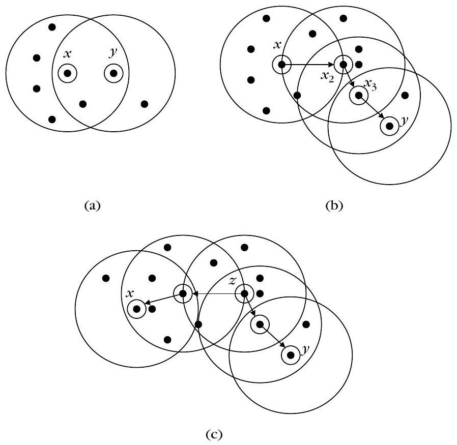
2D 散點分群示意圖：用紅色實心點標示「核心點」、白色空心橘點標示「邊界點」、灰色 × 標示「噪音」，並在一個核心點外畫出一個虛線 ε 半徑圓，用綠色箭頭連線標示「直接密度可達」、紫色連線標示「密度相連」。在 DBSCAN 中，「直接密度可達」需要哪兩個條件同時成立？
某個點不屬於任何簇、也不能由任何核心點密度可達，DBSCAN 把它稱作？
DBCLASD 與 DBSCAN 最大的不同是什麼？
DENCLUE 中的密度函數 f^X(x)=∑f^{x_i}(x) 最接近哪一種已知估計？
高維資料分群：子空間分群（CLIQUE / ENCLUS / PROCLUS / ORCLUS）
▼高維度的兩大難題
當維度 $l$ 高時（$R$-tree、$k$-$d$ tree 等在 $l\gt 20$ 左右效能退化到循序掃描），資料點在空間中會越散越開、彼此幾乎等距，使得「相似性／不相似性」愈來愈無意義（curse of dimensionality）。另一方面，常常只有少數特徵真正參與形成每個簇——簇其實存在於原始空間的子空間中。例如 Figure 15.23a 的 $C_1,C_2$ 來自 $x_2$ 軸上兩個小區間資料集中；Figure 15.23b 的簇則集中在 $(x_1,x_2)$ 這個子空間。因此有兩大方向：(1) 降維（dimensionality reduction）後再分群，與 (2) 直接在子空間內搜尋簇（子空間分群）。
降維分群與隨機投影
降維法先找出 $l'$ 維空間 $H_{l'}$（$l'\lt l$）再對投影做分群。$H_{l'}$ 可來自 (a) 特徵生成（PCA、SVD，會盡量保留距離）、(b) 特徵選取（對應監督的 wrapper／filter 模型）、或 (c) 隨機投影。隨機投影用一個 $l'\times l$ 投影矩陣 $A$ 決定；[Dasg 99] 證明 $l'$ 下界約為 $4(\varepsilon^{2}/2-\varepsilon^{3}/3)^{-1}\ln N$，能讓原始距離保留下來在 $1\pm\varepsilon$ 內。矩陣 $A$ 的建法例如：每個元素取 i.i.d. 零均值、單位變異高斯然後把每列正規化到單位長度；或取 $\pm 1$ 各半機率；或取 $+\sqrt{3}$（機率 1/6）、$-\sqrt{3}$（機率 1/6）、$0$（機率 2/3）。因不同隨機投影結果不同，常見做法是投影多次、各跑一次分群、再合成最終結果。
子空間分群（SCA）的兩種家族
與降維法不同，子空間分群演算法（SCA）直接在原始空間的各子空間中找簇，同時揭示簇與其所在子空間。分成網格式（grid-based，GBSCA）與點式（point-based，PBSCA）兩類。GBSCA 仰賴向下封閉性質（downward closure）：若某個簇存在準則在 $k$ 維空間滿足，則它在所有 $(k-1)$ 維子空間也滿足——這使子空間可由低維往高維逐一向上建構。
CLIQUE
CLIQUE 用邊長 $\xi$ 的網格切割特徵空間，單位 $u$（unit）是右開區間 $u_{t_{i}}=[a_{t_{i}},b_{t_{i}})$ 的乘積。單位 $u$ 的選擇度（selectivity）是落在其中的資料比例；若選擇度大於門檻 $\tau$ 就叫dense unit。單位彼此共享一個 $(k-1)$ 維面為直接相連，連通相連構成簇。CLIQUE 三階段：辨識子空間（自下往上找 dense units，$D_k$ 由 $D_{k-1}$ 中共享 $(k-2)$ 面且所有 $(k-1)$ 維投影都在 $D_{k-1}$ 的單位生成；再用 coverage 與 MDL 準則修剪）、找簇（每個子空間內找最大連通 dense units）、最小描述（用最少超矩形聯集表示每個簇）。CLIQUE 自動決定子空間、與資料順序無關、不需分布假設、時間隨 $N$ 線性、但隨 $l$ 指數；結果是「dense units 的聯集」而非精確點，且各簇重疊多，對 $\xi,\tau$ 很敏感。
ENCLUS 與 MAFIA
ENCLUS承襲 CLIQUE 三階段，但在第一階段改用熵來挑子空間：找高覆蓋率、高密度、且各維高度相關的子空間，因為聚簇結構強的子空間通常熵較低。子空間熵 $H(X^{k})=-\sum_{i} p_{i}\log_{2}p_{i}$（Eq 15.80），interest（interest）為 $\text{interest}(X^{k})=\sum_{j}H(x_{t_{j}}^{k})-H(X^{k})$（Eq 15.81），interest 越高代表維度間相關越強，獨立時為 0。低熵（小於門檻 $\omega$）且 interest 高（大於門檻 $\varepsilon$）的子空間是「顯著」。MAFIA 則讓網格「自適應」：把每一維切成一維視窗並以資料投影密度合併鄰近窗（閾值 $\beta$，典型 20%），得到一維單位後再照 CLIQUE 流程進行，比 CLIQUE 更快。
點式子空間分群：PROCLUS
PROCLUS繼承 $k$-medoids 家族（第 14 章），輸入是簇數 $m$ 與平均子空間維度 $s$。三階段：初始化（對全資料隨機抽樣，再挑互相距離大的代表點當初始 medoids）、迭代、精緻化。迭代中要 (A) 定每個簇的子空間：對 medoid $\boldsymbol{x}_{i}$ 算出與其他 medoid 的最近距離 $\delta_{i}$，抓半徑 $\delta_{i}$ 球內點 $L_{i}$，沿各維算平均距離 $d_{ij}$，再標準化成 $z_{ij}=(d_{ij}-e_{i})/\sigma_{i}$，把 $z_{ij}$ 最小的維度分配給 $D_{i}$（至少 2 維、總維度為 $s m$）；(B) 用Manhattan segmental distance $d_{D_{i}}(\boldsymbol{x},\boldsymbol{x}_{i})=\sum_{j\in D_{i}}|x_{j}-x_{ij}|/|D_{i}|$（Eq 15.82）指派點到最近的 medoid；(C) 算 $J(\Theta)$（平均 Manhattan segmental distance，Eq 15.83）；(D) 淘汰簇太小（少於 $(N/m)q$ 個點，$q\approx0.1$）的 bad medoid 並替換。最後做精緻化。PROCLUS 偏愛超球狀簇、要求各簇子空間大小相近、對參數敏感，但比 CLIQUE 稍快、複雜度隨 $l$ 線性。
點式子空間：ORCLUS
ORCLUS是聚合式階層法，每輪同時把簇數由 $m_{0}$ 降到 $m$、把子空間維度由 $l_{0}$ 降到 $l$，兩個降速因子 $a$（$0.5$）、$b$ 須滿足 $m=a^{t}m_{0}$、$l=b^{t}l_{0}$，故 $\ln(m/m_{0})/\ln(l/l_{0})=\ln a/\ln b$（Eq 15.84）。每個簇的子空間由「共變異矩陣 $\Sigma_{i}$ 對應最小 $q$ 個特徵值的特徵向量」張成（即點散布最少的 $q$ 維空間），這些特徵值之和是簇的投影能量 $E(C_{i},\mathcal{E}_{i})$。迭代時依能量合併最近的簇，並同步降低維度。複雜度 $O(m_{0}^{3}+m_{0}Nl_{0}+m_{0}^{2}l_{0}^{3})$，隨 $N$ 線性、隨 $l_{0}$ 三次方。因用平均代表點，也偏愛超球狀簇。
GBSCA 與 PBSCA 對照
- 表示法：GBSCA 用 dense units 聯集（較粗略）；PBSCA 用資料點（精確）。
- 歸屬：GBSCA 的點可透過投影屬於多個簇；PBSCA 的點只屬一個簇。
- 時序：GBSCA 先定子空間再找簇；PBSCA 同時迭代決定簇與子空間。
- 複雜度：兩者隨 $N$ 線性；GBSCA 隨 $l$ 指數、PBSCA 隨 $l$ 多項式。
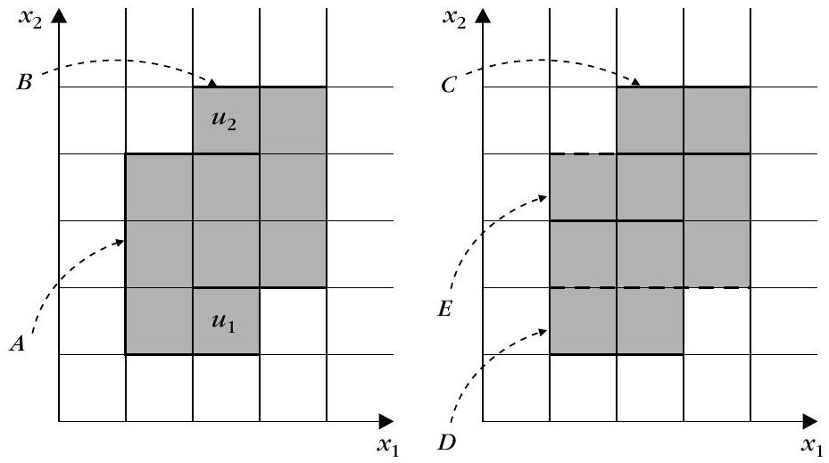
子空間分群中「向下封閉性質」指的是一個準則若在某子空間成立，則…
CLIQUE 中把資料比例超過門檻 τ 的單位叫什麼？
ENCLUS 挑子空間時使用的核心量度是什麼？
在 PROCLUS 的距離函數 d_Di(x,x_i) 中，只用了哪些座標？
其它分群演算法
▼禁忌搜尋與密度峰
利用禁忌搜尋（tabu search）的分群：先任選一個初始分群當狀態，基於目前狀態產生一批候選分群 $A$，依某種準則函數選「最好」者做下一個狀態，並用準則防止回到最近造訪過的狀態，重複到固定迭代數。初步結果顯示它可比得上硬分群與模擬退火。另一類直接把簇與 pdf 的峰連結：以 Parzen 窗估計密度（Tou 1974），或mountain 方法——給每個向量 $\boldsymbol{x}$ 一個能量源，其產生的勢能在 $\boldsymbol{x}$ 處有峰並快速衰減；空間某點的總勢能是所有向量勢能之和。算出每個資料點的勢值形成陣列 $\boldsymbol{v}$，挑出最大峰當第一個簇的代表，移除並更新其餘值，反覆直到終止條件。
混合模糊與聚合式
Frigui 1997 的方法結合模糊分群與聚合式演算法，最小化
$$J(\boldsymbol{\theta},U)=\sum_{i=1}^{N}\sum_{j=1}^{m} u_{ij}^{2}d(\boldsymbol{x}_{i},C_{j})-a\sum_{j=1}^{m}\Big[\sum_{i=1}^{N}u_{ij}^{2}\Big]$$
這裡簇數 $m$ 是可以變動的。第一項在 $m=N$ 時最小、第二項在 $m=1$ 時最大，彼此對衝。要注意由此產生的簇階層並不一定具備「嵌套（nested）」性質。
五花八門的其它方法
- 不用距離概念的演算法（Matt 1991）；基於概念距離的（Kodratoff 1988）。
- 借用重力理論的分群（Oyanagi 2001、Chen 2005）。
- 適於離散值特徵、建構分類樹的分群（Fisher 1987、Biswas 1998）；用機率框架的圖論方法（Ben 1999）。
- 結合監督與非監督：當只有一小部分資料有標籤時很有用（Pedro 1997）。
- 訊息理論觀點：以最小化熵當作分群準則，相當於取得最大確定度（Roberto 2000）；還有基於 Renyi 熵估計的 valley-seeking（Goksu 2002）。
WaveCluster 小波分群
WaveCluster 先把 $l$ 維空間切網格、每單位以點數表示成 $l$ 維訊號，再對單位做 $l$ 維小波變換（第 6 章），在每個解析度找出變換後連通單位當簇，最後對應回原始資料。優點：可有效處理離群點、對點順序不敏感、可形成任意形狀簇、不需要指定簇數；複雜度 $O(N+r^{l})$，最適合低維但大型的資料。
序列與受限分群
序列資料（DNA、web mining）分群常用Edit distance與HMM；但序列很長時會很耗時，因此有 BLAST、FASTA 等啟發式。此外還有受限分群（constraint clustering）：利用少許標籤資料讓分群更精準，最簡單的約束是成對約束——Must-Link（兩者必同簇）與Cannot-Link（兩者必不同簇）。早期做法是把 k-Means 或階層演算法改寫成能處理約束，新一點的做法是用約束去「學習距離度量」，讓距離符合使用者的期望。
禁忌搜尋分群的關鍵特徵是什麼？
受限分群裡，讓兩個樣本「必須」放在同一簇的約束叫什麼？
WaveCluster 的主要限制是什麼？
分群結果的組合（Ensemble / Consensus）
▼為何要組合分群
本節目標是：由 $n$ 個針對同一資料集 $X$ 產生的分群 $\mathcal{E}=\{\mathcal{R}_{1},\ldots,\mathcal{R}_{n}\}$，融合成一個更準確的最終（consensus）分群 $\mathcal{F}$。動機是基於整個集合得出的共識分群，通常比任何單一分群更能描述資料。每個分群 $\mathcal{R}_{i}$ 可用 label vector $\boldsymbol{y}_{i}$ 表示：若 $\mathcal{R}_{i}=\{\{x_{1},x_{2},x_{6},x_{10}\},\{x_{3},x_{4},x_{7}\},\{x_{5},x_{8},x_{9}\}\}$，則 $\boldsymbol{y}_{i}=[1,1,2,2,3,1,2,3,3,1]$。組合問題分兩步：(1) 產生一組分群（ensemble）；(2) 把組內分群組合成共識。
如何產生具多樣性的分群集合
希望組內分群越獨立越好，常用方向：
- 全部資料、全部特徵：用同一演算法不同初始／參數，或不同演算法（又稱穩健集中式分群）。
- 全部資料、部分特徵：選不同特徵子集或隨機投影後再分（feature-distributed）。
- 部分資料、全部特徵：用 bootstrap／抽樣製造子集再分；高維時先 PCA 降維。
co-association matrix
多種組合法用共聚對矩陣（co-association matrix）$\mathcal{C}$：$c(i,j)=n_{ij}/n$，其中 $n_{ij}$ 是 $\boldsymbol{x}_{i},\boldsymbol{x}_{j}$ 在 $n$ 個分群中同簇的次數。$c(i,j)\in[0,1]$，值越大代表兩點越可能相似。
依共聚對矩陣的方法
把 $\mathcal{C}$ 當相似度矩陣跑 single link（或 complete、average link），再從樹狀圖中選 lifetime 最大的分群當最終結果。這類方法需要較大的 $n$ 才能可靠估計 $\mathcal{C}$。
圖形基礎方法
- IBGF（instance-based）：完全連通圖，頂點=資料點、邊權= $c(i,j)$，切成 $m$ 個近似等大的點集使跨子集邊權和最小（用 normalized cut 或 ratio-cut）。
- CBGF（cluster-based）：頂點=每個分群裡的簇，兩簇間邊權用 Jaccard $w_{ij}=|C_{i}\cap C_{j}|/|C_{i}\cup C_{j}|$，切成 $m$ 份後，每個點按「出現在哪一份最多」歸類。
- HBGF（hybrid bipartite）：頂點同時含資料點與簇，點與簇若屬於該簇則邊權 1，再對二部圖做圖分群（如頻譜分群）。
舉例：$\mathcal{R}_{1}=\{\{x_1\ldots x_6\},\{x_7,x_8,x_9\}\}$、$\mathcal{R}_{2}=\{\{x_1\ldots x_5\},\{x_6\ldots x_9\}\}$，HBGF 的二分切法給出最終分群 $\{\{x_1\ldots x_5\},\{x_6\ldots x_9\}\}$（Figure 15.28）。複雜度上 IBGF 是 $O(N^{2})$（全連通圖切分），CBGF 是 $O(t^{2})$（$t=\sum m_{i}$，通常 $t\ll N$），HBGF 是 $O(nN)$。實驗顯示 HBGF 表現常等於或優於 IBGF、CBGF，且所有方法都隨 $n$ 變大而更好。
成本函數最佳化
- 效用函數（median clustering）：衡量候選 $\mathcal{F}$ 與 $\mathcal{R}_{i}$ 的一致性 $$U(\mathcal{F},\mathcal{R}_{i})=\sum_{r} P(F_{r})\sum_{j} P(C_{i}^{j}\mid F_{r})^{2}-\sum_{j}P(C_{i}^{j})^{2}$$ 當 $\mathcal{F}$ 與 $\mathcal{R}_{i}$ 相同時最大；整體 $U(\mathcal{F},\mathcal{E})=\sum_{i}U(\mathcal{F},\mathcal{R}_{i})$ 最大者就是最佳摘要。此問題等價於對「以各分群標籤為座標的資料」跑 $k$-means 的最小平方錯誤。
- 正規化互資訊（NMI）：與資訊論的互資訊相呼應， $$\text{NMI}(\mathcal{R}_{1},\mathcal{R}_{2})=\frac{2}{N}\sum_{q,r} n_{q}^{r}\log_{m_{1}m_{2}}\Big(\frac{n_{q}^{r}N}{n_{q}n_{r}}\Big)$$ 定義平均 ANMI 後，以最大化 ANMI 的分群當共識。NMI 也能拿來評量已知標籤的分群好壞。
- 混合模型（mixture model）：把每個點轉成 $n$ 維標籤向量 $\boldsymbol{x}_{i}'$（第 $j$ 分量是它在第 $j$ 個分群的簇標籤），對 $X'$ 用有限混合模型 $P(\boldsymbol{x}';\Theta)=\sum_{q}P_{q}P(\boldsymbol{x}'\mid F_{q};\theta_{q})$；假設各分量獨立、用多項式分布建模條件機率，最後以 EM 估計參數得到最終簇標籤。
其它補充
還有變化：把 $X_{i}$ 依「有重疊區域的點」提高採樣機率、依序抽樣來強化共識（Topchy 2004）。比較兩個分群時常要先對齊簇標籤（如 $\boldsymbol{y}_{1}=[1,1,1,1,2,2,2]$ 與 $\boldsymbol{y}_{2}=[2,2,2,2,1,1,1]$ 是同一分群），常用 Hungarian 方法求最佳對應。組合分群也與分散式分群（feature-distributed、object-distributed 等）密切相關。
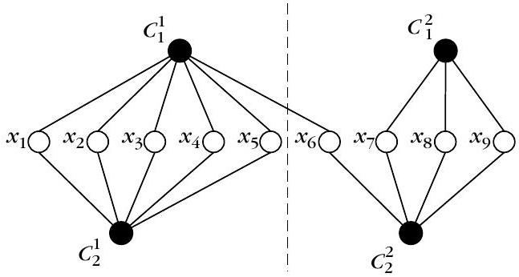
一幅簡潔的教學示意圖：左側三個方框代表同一組資料點的三次不同分群結果（各以藍色簇一與橘色簇二切分，切法互不相同），中間一個綠色「合併融合」方塊表示統計成對資料點的共現次數與共現矩陣，右側一個紫色「共識分群」方塊顯示融合後更穩定的最終兩簇結果，藍色與橘色點群清楚分明。co-association 矩陣的元素 c(i,j)=n_ij/n 表示什麼？
「median clustering」是在最佳化哪種量？
NMI（正規化互資訊）最主要用途之一是哪一項？
HBGF 的圖頂點由什麼組成？